Chapter 20 Supervised Learning: Regression
20.1 What is Regression?
20.1.1 Introduction
- Regression
-
Predict a numerical outcome (“dependent variable”) from a set of inputs (“independent variables”).
Statistical Sense: Predicting the expected value of the outcome.
Casual Sense: Predicting a numerical outcome.
Regression from a Machine Learning Perspective
- Scientific mindset: Modeling to understand the data generation process
Collinearity
Collinearity: when independent variables are partially correlated.
High collinearity:
Coefficients (or standard errors) look too large
Model may be unstable
20.1.2 Linear regression
\(y = β_0 + β_1 x_1 + β_2 x_2 + ...\)
\(y\) is linearly related to each \(x_i\)
Each \(x_i\) contributes additively to \(y\)
Linear Regression in R
# lm() function
model <- lm(y ~ x1 + x2..., data)
# look at the model
model
# more information od the model
summary(model)
broom::glance(cmodel)
sigr::wrapFTest(cmodel)20.1.2.1 Simple regression
unemployment given the rates of male and female unemployment in the United States over several years.
The task is to predict the rate of female unemployment from the observed rate of male unemployment. The outcome is female_unemployment, and the input is male_unemployment.
The sign of the variable coefficient tells you whether the outcome increases (+) or decreases (-) as the variable increases.
library(tidyverse)
unemployment <- read_rds("data/unemployment.rds")
str(unemployment)## 'data.frame': 13 obs. of 2 variables:
## $ male_unemployment : num 2.9 6.7 4.9 7.9 9.8 ...
## $ female_unemployment: num 4 7.4 5 7.2 7.9 ...# Use the formula to fit a model: unemployment_model
unemployment_model <- lm(female_unemployment ~ male_unemployment, unemployment)
# Print it
unemployment_model##
## Call:
## lm(formula = female_unemployment ~ male_unemployment, data = unemployment)
##
## Coefficients:
## (Intercept) male_unemployment
## 1.434 0.695The coefficient for male unemployment is positive, so female unemployment increases as male unemployment does.
20.1.2.2 Examining a model
There are a variety of different ways to examine a model; each way provides different information.
# Call summary() on unemployment_model to get more details
summary(unemployment_model)##
## Call:
## lm(formula = female_unemployment ~ male_unemployment, data = unemployment)
##
## Residuals:
## Min 1Q Median 3Q Max
## -0.776 -0.341 -0.090 0.279 1.312
##
## Coefficients:
## Estimate Std. Error t value Pr(>|t|)
## (Intercept) 1.4341 0.6034 2.38 0.037 *
## male_unemployment 0.6945 0.0977 7.11 0.00002 ***
## ---
## Signif. codes: 0 '***' 0.001 '**' 0.01 '*' 0.05 '.' 0.1 ' ' 1
##
## Residual standard error: 0.58 on 11 degrees of freedom
## Multiple R-squared: 0.821, Adjusted R-squared: 0.805
## F-statistic: 50.6 on 1 and 11 DF, p-value: 0.0000197# Call glance() on unemployment_model to see the details in a tidier form
library(broom)
glance(unemployment_model)## # A tibble: 1 × 12
## r.squared adj.r.squared sigma statistic p.value df logLik AIC BIC
## <dbl> <dbl> <dbl> <dbl> <dbl> <dbl> <dbl> <dbl> <dbl>
## 1 0.821 0.805 0.580 50.6 0.0000197 1 -10.3 26.6 28.3
## # ℹ 3 more variables: deviance <dbl>, df.residual <int>, nobs <int># Call wrapFTest() on unemployment_model to see the most relevant details
sigr::wrapFTest(unemployment_model)## [1] "F Test summary: (R2=0.8213, F(1,11)=50.56, p=1.966e-05)."20.1.3 Predicting model
You will also use your model to predict on the new data in newrates, which consists of only one observation, where male unemployment is 5%.
predict(model, newdata)
summary(unemployment)## male_unemployment female_unemployment
## Min. :2.90 Min. :4.00
## 1st Qu.:4.90 1st Qu.:4.40
## Median :6.00 Median :5.20
## Mean :5.95 Mean :5.57
## 3rd Qu.:6.70 3rd Qu.:6.10
## Max. :9.80 Max. :7.90Plot a scatterplot of dframe$outcome versus dframe$pred (pred on the x axis, outcome on the y axis), along with a abine where outcome == pred.
# Predict female unemployment in the unemployment dataset
unemployment$prediction <- predict(unemployment_model, unemployment)
# Make a plot to compare predictions to actual (prediction on x axis).
ggplot(unemployment, aes(x = prediction, y = female_unemployment)) +
geom_point() +
geom_abline(color = "blue")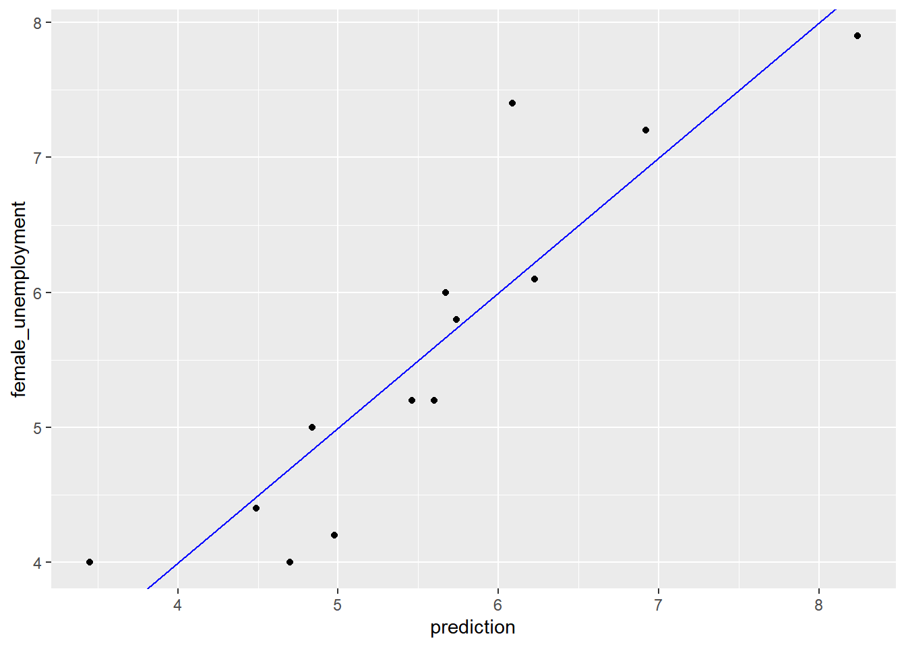
newrates <- data.frame(male_unemployment = 5)
# Predict female unemployment rate when male unemployment is 5%
predict(unemployment_model, newrates)## 1
## 4.9120.1.3.1 Multivariate linear regression
you will work with the blood pressure dataset, and model blood_pressure as a function of weight and age.
bloodpressure <- read_rds("data/bloodpressure.rds")
str(bloodpressure)## 'data.frame': 11 obs. of 3 variables:
## $ blood_pressure: int 132 143 153 162 154 168 137 149 159 128 ...
## $ age : int 52 59 67 73 64 74 54 61 65 46 ...
## $ weight : int 173 184 194 211 196 220 188 188 207 167 ...summary(bloodpressure)## blood_pressure age weight
## Min. :128 Min. :46.0 Min. :167
## 1st Qu.:140 1st Qu.:56.5 1st Qu.:186
## Median :153 Median :64.0 Median :194
## Mean :150 Mean :62.5 Mean :195
## 3rd Qu.:160 3rd Qu.:69.5 3rd Qu.:209
## Max. :168 Max. :74.0 Max. :220# Fit the model: bloodpressure_model
bloodpressure_model <- lm(blood_pressure ~ age + weight, bloodpressure)
# Print bloodpressure_model and call summary()
summary(bloodpressure_model)##
## Call:
## lm(formula = blood_pressure ~ age + weight, data = bloodpressure)
##
## Residuals:
## Min 1Q Median 3Q Max
## -3.464 -1.195 -0.408 1.851 2.698
##
## Coefficients:
## Estimate Std. Error t value Pr(>|t|)
## (Intercept) 30.994 11.944 2.59 0.0319 *
## age 0.861 0.248 3.47 0.0084 **
## weight 0.335 0.131 2.56 0.0335 *
## ---
## Signif. codes: 0 '***' 0.001 '**' 0.01 '*' 0.05 '.' 0.1 ' ' 1
##
## Residual standard error: 2.32 on 8 degrees of freedom
## Multiple R-squared: 0.977, Adjusted R-squared: 0.971
## F-statistic: 169 on 2 and 8 DF, p-value: 0.000000287In this case the coefficients for both age and weight are positive, which indicates that bloodpressure tends to increase as both age and weight increase.
You will also compare the predictions to outcomes graphically.
# Predict blood pressure using bloodpressure_model: prediction
bloodpressure$prediction <- predict(bloodpressure_model, bloodpressure)
# Plot the results
ggplot(bloodpressure, aes(prediction, blood_pressure)) +
geom_point() +
geom_abline(color = "blue")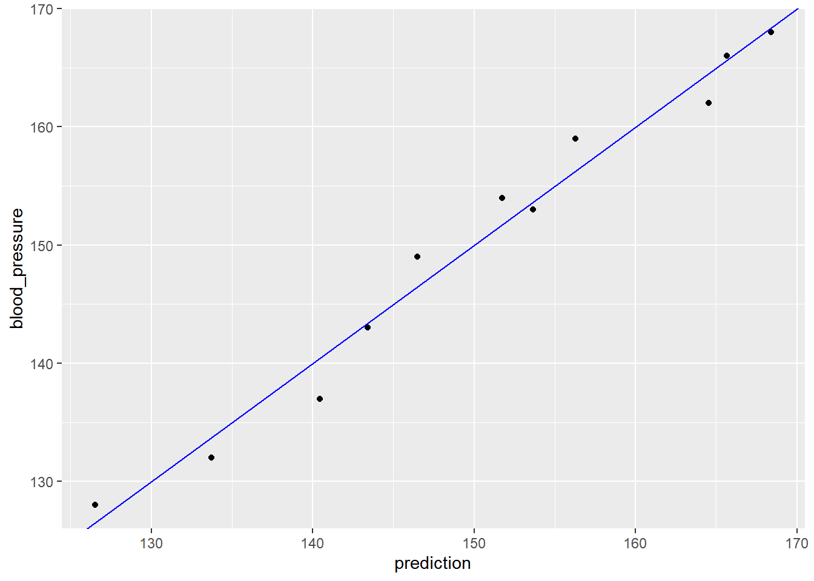
The results stay fairly close to the line of perfect prediction, indicating that the model fits the training data well. From a prediction perspective, multivariate linear regression behaves much as simple (one-variable) linear regression does.
20.2 Training and Evaluating Models
20.2.1 Graphically
20.2.1.1 The Residual Plot
Plot the model’s predictions against the actual value. Are the predictions near the \(x = y\) line?
# Make predictions from the model
unemployment$predictions <- predict(unemployment_model, unemployment)
# Fill in the blanks to plot predictions (on x-axis) versus the female_unemployment rates
ggplot(unemployment, aes(x = predictions, y = female_unemployment)) +
geom_point() +
geom_abline()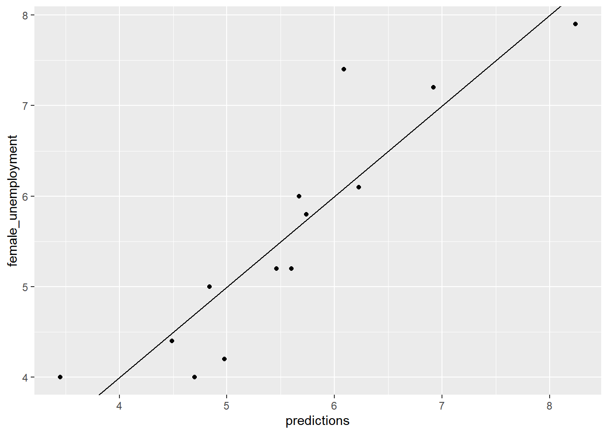
Plot predictions (on the x-axis) versus residuals (on the y-axis).
This gives you a different view of the model’s predictions as compared to ground truth.
# Calculate residuals
unemployment$residuals <- unemployment$female_unemployment - unemployment$predictions
# Fill in the blanks to plot predictions (on x-axis) versus the residuals
ggplot(unemployment, aes(x = predictions, y = residuals)) +
geom_pointrange(aes(ymin = 0, ymax = residuals)) +
geom_hline(yintercept = 0, linetype = 3) +
ggtitle("residuals vs. linear model prediction")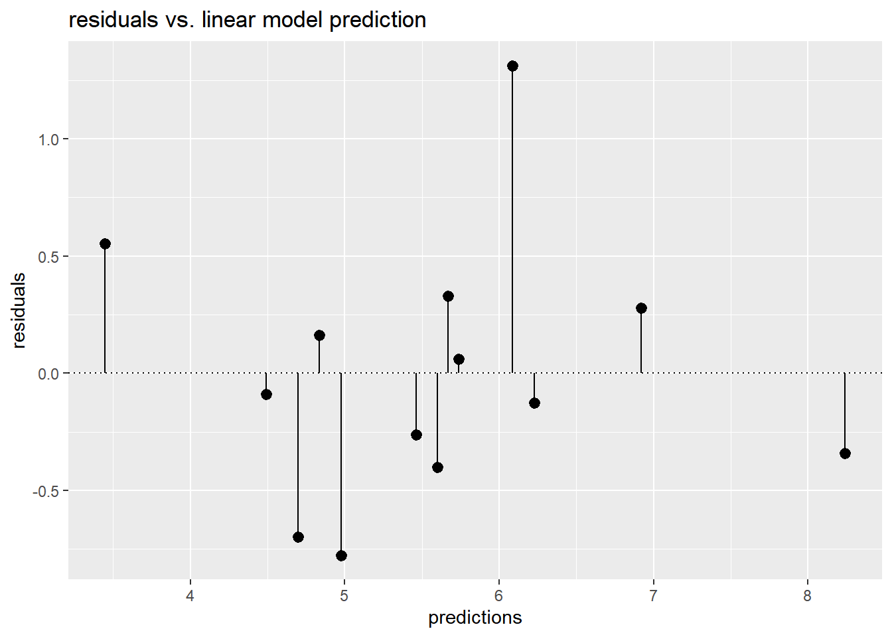
20.2.1.2 The Gain Curve
Now, you will also plot the gain curve of the unemployment_model’s predictions against actual female_unemployment using the WVPlots::GainCurvePlot() function.
GainCurvePlot(frame, xvar, truthvar, title)
xvar= “prediction”truthvar= “actual outcome”title= title of the plot
Relative gini coefficient
When the predictions sort in exactly the same order, the relative Gini coefficient is 1.
When the model sorts poorly, the relative Gini coefficient is close to zero, or even negative.
Wizard curve: perfect model, 藍線越接近綠線越好
# Load the package WVPlots
library(WVPlots)
# Plot the Gain Curve
GainCurvePlot(unemployment, "predictions", "female_unemployment", "Unemployment model")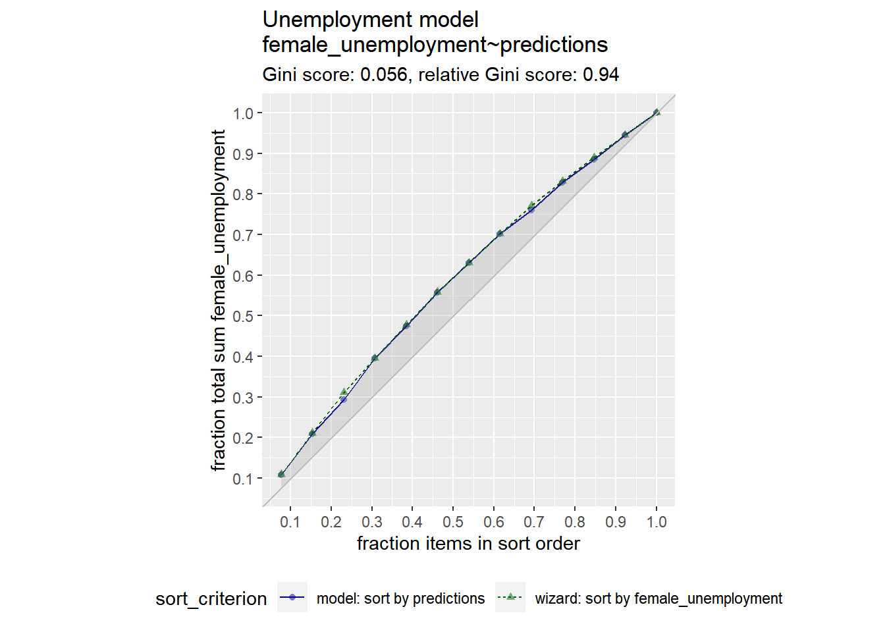
A relative gini coefficient close to one shows that the model correctly sorts high unemployment situations from lower ones.
20.2.2 Root Mean Squared Error
RMSE
\(RMSE = \sqrt{\overline{(pred − y)^2}}\)
\(pred − y\) : the error, or residuals vector = \(res\)
\(\overline{(pred − y)^2}\) : mean value of \((pred − y)^2\)
One way to evaluate the RMSE is to compare it to the standard deviation of the outcome. With a good model, the RMSE should be smaller.
# For convenience put the residuals in the variable res
res <- unemployment$residuals
# Calculate RMSE, assign it to the variable rmse and print it
rmse <- sqrt(mean(res^2))
# Calculate the standard deviation of female_unemployment and print it
sd_unemployment <- sd(unemployment$female_unemployment)
c(rmse = rmse, sd = sd_unemployment)## rmse sd
## 0.534 1.314An RMSE much smaller than the outcome’s standard deviation suggests a model that predicts well.
20.2.3 R-squared
- R-squared (\(R^2\))
-
A measure of how well the model fits or explains the data.
A value between 0-1
near 1: model fits well
near 0: no better than guessing the average value
Calculating: the variance explained by the model
\(R^2 = 1 - \frac{RSS}{SS_{Tot}}\)
\(RSS = \sum{(y - prediction)^2}\)
- Residual sum of squares (variance from model)
\(SS_{Tot} = \sum{(y - \overline{y})^2}\)
- Total sum of squares (variance of data)
Correlation and \(R^2\)
\(ρ\) =
cor(predict, actual)\(ρ^2\)= \(R^2\)
20.2.3.1 Calculate R-squared
You will examine how well the model fits the data: that is, how much variance does it explain.
# Calculate and print the mean female_unemployment: fe_mean
fe_mean <- mean(unemployment$female_unemployment)
# Calculate and print the total sum of squares: tss
tss <- sum((unemployment$female_unemployment - fe_mean)^2)
# Calculate and print residual sum of squares: rss
rss <- sum(unemployment$residuals^2)
# Calculate and print the R-squared: rsq
rsq <- 1 - rss / tss
# Get R-squared from glance and print it
rsq_glance <- glance(unemployment_model)$r.squared
# Is it the same as what you calculated?
list(rsq_calculate = rsq, rsq_glance = rsq_glance)## $rsq_calculate
## [1] 0.821
##
## $rsq_glance
## [1] 0.821An R-squared close to one suggests a model that predicts well.
20.2.3.2 Correlation and R-squared
The linear correlation of two variables, x and y, measures the strength of the linear relationship between them. When x and y are respectively:
the outcomes of a regression model that minimizes squared-error (like linear regression) and
the true outcomes of the training data,
then the square of the correlation is the same as \(R^2\).
# Get the correlation between the prediction and true outcome: rho and print it
(rho <- cor(unemployment$predictions, unemployment$female_unemployment))## [1] 0.906# Square rho: rho2 and print it
(rho2 <- rho^2)## [1] 0.821# Get R-squared from glance and print it
(rsq_glance <- glance(unemployment_model)$r.squared)## [1] 0.821Remember this equivalence is only true for the training data, and only for models that minimize squared error.
20.2.4 Training a Model
Test/Train Split
- Recommended method when data is plentiful
Cross-Validation
- Preferred when data is not large enough to split off a test set
library(vtreat)
splitPlan <- kWayCrossValidation(nRows, nSplits, NULL, NULL)nRows: number of rows in the training datanSplits: number folds (partitions) in the cross-validation- e.g, nfolds = 3 for 3-way cross-validation
20.2.4.1 Generate a random test/train split
mpg describes the characteristics of several makes and models of cars from different years. The goal is to predict city fuel efficiency from highway fuel efficiency.
n this exercise, you will split mpg into a training set mpg_train (75% of the data) and a test set mpg_test (25% of the data).
One way to do this is to generate a column of uniform random numbers between 0 and 1, using the function runif().
Generate a vector of uniform random numbers:
gp = runif(N). (N = data sample size)dframe[gp < X,]will be about the right size.dframe[gp >= X,]will be the complement.
glimpse(mpg)## Rows: 234
## Columns: 13
## $ manufacturer <chr> "audi", "audi", "audi", "audi", "audi", "audi", "audi", "…
## $ model <chr> "a4", "a4", "a4", "a4", "a4", "a4", "a4", "a4 quattro", "…
## $ displ <dbl> 1.8, 1.8, 2.0, 2.0, 2.8, 2.8, 3.1, 1.8, 1.8, 2.0, 2.0, 2.…
## $ year <int> 1999, 1999, 2008, 2008, 1999, 1999, 2008, 1999, 1999, 200…
## $ cyl <int> 4, 4, 4, 4, 6, 6, 6, 4, 4, 4, 4, 6, 6, 6, 6, 6, 6, 8, 8, …
## $ trans <chr> "auto(l5)", "manual(m5)", "manual(m6)", "auto(av)", "auto…
## $ drv <chr> "f", "f", "f", "f", "f", "f", "f", "4", "4", "4", "4", "4…
## $ cty <int> 18, 21, 20, 21, 16, 18, 18, 18, 16, 20, 19, 15, 17, 17, 1…
## $ hwy <int> 29, 29, 31, 30, 26, 26, 27, 26, 25, 28, 27, 25, 25, 25, 2…
## $ fl <chr> "p", "p", "p", "p", "p", "p", "p", "p", "p", "p", "p", "p…
## $ class <chr> "compact", "compact", "compact", "compact", "compact", "c…
## $ pred.cv <dbl> 20.8, 20.8, 22.2, 21.3, 18.5, 18.6, 19.2, 18.6, 17.8, 19.…
## $ pred <dbl> 20.7, 20.7, 22.0, 21.3, 18.6, 18.6, 19.3, 18.6, 17.9, 20.…# Use nrow to get the number of rows in mpg (N) and print it
(N <- nrow(mpg))## [1] 234# Calculate how many rows 75% of N should be and print it
# Hint: use round() to get an integer
(target <- round(N * 0.75))## [1] 176# Create the vector of N uniform random variables: gp
gp <- runif(N)
# Use gp to create the training set: mpg_train (75% of data) and mpg_test (25% of data)
mpg_train <- mpg[gp < 0.75, ]
mpg_test <- mpg[gp >= 0.75, ]
# Use nrow() to examine mpg_train and mpg_test
c(train_n = nrow(mpg_train), test_n = nrow(mpg_test))## train_n test_n
## 180 54A random split won’t always produce sets of exactly X% and (100-X)% of the data, but it should be close.
20.2.4.2 Train a model using test/train split
You will use mpg_train to train a model to predict city fuel efficiency (cty) from highway fuel efficiency (hwy).
# Now use lm() to build a model mpg_model from mpg_train that predicts cty from hwy
mpg_model <- lm(cty ~ hwy, mpg_train)
# Use summary() to examine the model
summary(mpg_model)##
## Call:
## lm(formula = cty ~ hwy, data = mpg_train)
##
## Residuals:
## Min 1Q Median 3Q Max
## -2.8862 -0.7400 0.0108 0.7051 2.5889
##
## Coefficients:
## Estimate Std. Error t value Pr(>|t|)
## (Intercept) 0.7766 0.3551 2.19 0.03 *
## hwy 0.6844 0.0147 46.62 <0.0000000000000002 ***
## ---
## Signif. codes: 0 '***' 0.001 '**' 0.01 '*' 0.05 '.' 0.1 ' ' 1
##
## Residual standard error: 1.15 on 178 degrees of freedom
## Multiple R-squared: 0.924, Adjusted R-squared: 0.924
## F-statistic: 2.17e+03 on 1 and 178 DF, p-value: <0.000000000000000220.2.4.3 Evaluate model using test/train split
Now you will test the model mpg_model on the test data, mpg_test.
Functions rmse() and r_squared() to calculate RMSE and R-squared
# function rmse,
# predcol: The predicted values, ycol: The actual outcome
rmse <- function(predcol, ycol) {
res = predcol-ycol
sqrt(mean(res^2))
}
# function r_squared
r_squared <- function(predcol, ycol) {
tss = sum( (ycol - mean(ycol))^2 )
rss = sum( (predcol - ycol)^2 )
1 - rss/tss
}Evaluate RMSE for both the test and training sets.
# predict cty from hwy for the training set
mpg_train$pred <- predict(mpg_model, mpg_train)
# predict cty from hwy for the test set
mpg_test$pred <- predict(mpg_model, mpg_test)
# Evaluate the rmse on both training and test data and print them
rmse_train <- rmse(mpg_train$pred, mpg_train$cty)
rmse_test <- rmse(mpg_test$pred, mpg_test$cty)
list(rmse_train = rmse_train, rmse_test = rmse_test)## $rmse_train
## [1] 1.14
##
## $rmse_test
## [1] 1.55Evaluate r-squared for both the test and training sets.
# Evaluate the r-squared on both training and test data.and print them
rsq_train <- r_squared(mpg_train$pred, mpg_train$cty)
rsq_test <- r_squared(mpg_test$pred, mpg_test$cty)
list(rsq_train = rsq_train, rsq_test = rsq_test)## $rsq_train
## [1] 0.924
##
## $rsq_test
## [1] 0.885Plot test data.
# Plot the predictions (on the x-axis) against the outcome (cty) on the test data
ggplot(mpg_test, aes(x = pred, y = cty)) +
geom_point() +
geom_abline()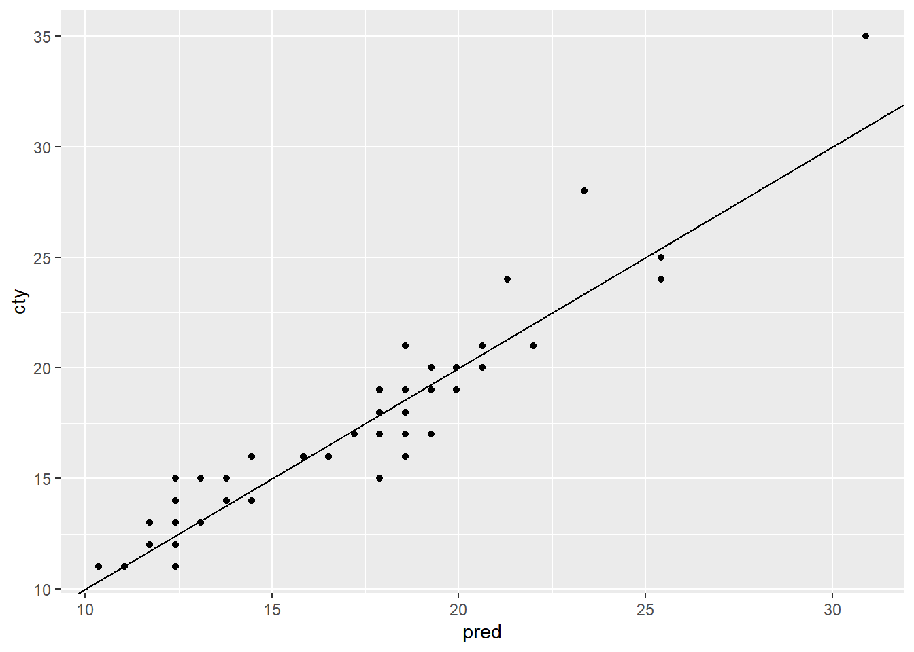
Good performance on the test data is more confirmation that the model works as expected.
20.2.4.4 Create a cross validation plan
n-fold cross validation plan from vtreat package:
splitPlan <- kWayCrossValidation(nRows, nSplits, dframe, y)
nRowsis the number of rows of data to be split.nSplitsis the desired number of cross-validation folds.dframeandy: set them both toNULL. they are for compatibility with othervtreatdata partitioning functions.
The resulting splitPlan is a list of nSplits elements; each element contains two vectors:
train: the indices ofdframethat will form the training setapp: the indices ofdframethat will form the test (or application) set
# Load the package vtreat
library(vtreat)##
## Attaching package: 'vtreat'## The following object is masked from 'package:infer':
##
## fit# Get the number of rows in mpg
nRows <- nrow(mpg)
# Implement the 3-fold cross-fold plan with vtreat
splitPlan <- kWayCrossValidation(nRows, 3, NULL, NULL)
# Examine the split plan
str(splitPlan)## List of 3
## $ :List of 2
## ..$ train: int [1:156] 4 5 6 7 8 9 10 11 13 14 ...
## ..$ app : int [1:78] 81 134 206 77 12 69 195 127 26 23 ...
## $ :List of 2
## ..$ train: int [1:156] 1 2 3 5 7 9 10 11 12 14 ...
## ..$ app : int [1:78] 79 98 198 138 80 56 186 156 101 39 ...
## $ :List of 2
## ..$ train: int [1:156] 1 2 3 4 6 8 12 13 17 19 ...
## ..$ app : int [1:78] 209 16 100 54 175 147 196 162 124 122 ...
## - attr(*, "splitmethod")= chr "kwaycross"20.2.4.5 Evaluate a modeling procedure using n-fold cross-validation
If dframe is the training data, then one way to add a column of cross-validation predictions to the frame:
# Initialize a column of the appropriate length
dframe$pred.cv <- 0
# k is the number of folds
# splitPlan is the cross validation plan
for(i in 1:k) {
# Get the ith split
split <- splitPlan[[i]]
# Build a model on the training data
# from this split
# (lm, in this case)
model <- lm(fmla, data = dframe[split$train,])
# make predictions on the
# application data from this split
dframe$pred.cv[split$app] <- predict(model, newdata = dframe[split$app,])
}Run the 3-fold cross validation plan from splitPlan and put the predictions in the column mpg$pred.cv.
# Run the 3-fold cross validation plan from splitPlan
k <- 3 # Number of folds
mpg$pred.cv <- 0
for(i in 1:k) {
split <- splitPlan[[i]]
model <- lm(cty ~ hwy, data = mpg[split$train,])
mpg$pred.cv[split$app] <- predict(model, newdata = mpg[split$app,])
}
head(mpg)## # A tibble: 6 × 13
## manufacturer model displ year cyl trans drv cty hwy fl class
## <chr> <chr> <dbl> <int> <int> <chr> <chr> <int> <int> <chr> <chr>
## 1 audi a4 1.8 1999 4 auto(l5) f 18 29 p compa…
## 2 audi a4 1.8 1999 4 manual(m5) f 21 29 p compa…
## 3 audi a4 2 2008 4 manual(m6) f 20 31 p compa…
## 4 audi a4 2 2008 4 auto(av) f 21 30 p compa…
## 5 audi a4 2.8 1999 6 auto(l5) f 16 26 p compa…
## 6 audi a4 2.8 1999 6 manual(m5) f 18 26 p compa…
## # ℹ 2 more variables: pred.cv <dbl>, pred <dbl>Are the two values about the same?
# Predict from a full model
mpg$pred <- predict(lm(cty ~ hwy, data = mpg))
# Get the rmse of the full model's predictions
rmse(mpg$pred, mpg$cty)## [1] 1.25# Get the rmse of the cross-validation predictions
rmse(mpg$pred.cv, mpg$cty)## [1] 1.28Remember, cross-validation validates the modeling process, not an actual model.
20.3 Issues to Consider
20.3.1 Categorical IV
one-hot-encoding
model.matrix(): Converts categorical variable with N levels into N - 1 indicator variables.
20.3.1.1 Structure of categorical inputs
You will call model.matrix() to examine how R represents data with both categorical and numerical inputs for modeling.
The dataset flowers following columns:
Flowers: the average number of flowers on a meadowfoam plantIntensity: the intensity of a light treatment applied to the plantTime: A categorical variable - when (LateorEarly) in the lifecycle the light treatment occurred
The ultimate goal is to predict Flowers as a function of Time and Intensity.
flowers <- read_delim("data/flowers.txt")
glimpse(flowers)## Rows: 24
## Columns: 3
## $ Flowers <dbl> 62.3, 77.4, 55.3, 54.2, 49.6, 61.9, 39.4, 45.7, 31.3, 44.9, …
## $ Time <chr> "Late", "Late", "Late", "Late", "Late", "Late", "Late", "Lat…
## $ Intensity <dbl> 150, 150, 300, 300, 450, 450, 600, 600, 750, 750, 900, 900, …# Use unique() to see how many possible values Time takes
unique(flowers$Time)## [1] "Late" "Early"TimeLate = Late = 1; TimeLate = Early = 0
# Use fmla and model.matrix to see how the data is represented for modeling
mmat <- model.matrix(Flowers ~ Intensity + Time, flowers)
# Examine the first 20 lines of mmat
head(mmat, 20)## (Intercept) Intensity TimeLate
## 1 1 150 1
## 2 1 150 1
## 3 1 300 1
## 4 1 300 1
## 5 1 450 1
## 6 1 450 1
## 7 1 600 1
## 8 1 600 1
## 9 1 750 1
## 10 1 750 1
## 11 1 900 1
## 12 1 900 1
## 13 1 150 0
## 14 1 150 0
## 15 1 300 0
## 16 1 300 0
## 17 1 450 0
## 18 1 450 0
## 19 1 600 0
## 20 1 600 0# Examine the first 20 lines of flowers
head(flowers, 20)## # A tibble: 20 × 3
## Flowers Time Intensity
## <dbl> <chr> <dbl>
## 1 62.3 Late 150
## 2 77.4 Late 150
## 3 55.3 Late 300
## 4 54.2 Late 300
## 5 49.6 Late 450
## 6 61.9 Late 450
## 7 39.4 Late 600
## 8 45.7 Late 600
## 9 31.3 Late 750
## 10 44.9 Late 750
## 11 36.8 Late 900
## 12 41.9 Late 900
## 13 77.8 Early 150
## 14 75.6 Early 150
## 15 69.1 Early 300
## 16 78 Early 300
## 17 57 Early 450
## 18 71.1 Early 450
## 19 62.9 Early 600
## 20 52.2 Early 60020.3.1.2 Modeling with categorical inputs
You will fit a linear model to the flowers data, to predict Flowers as a function of Time and Intensity.
# Fit a model to predict Flowers from Intensity and Time : flower_model
flower_model <- lm(Flowers ~ Intensity + Time, flowers)
# Use summary to examine flower_model
summary(flower_model)##
## Call:
## lm(formula = Flowers ~ Intensity + Time, data = flowers)
##
## Residuals:
## Min 1Q Median 3Q Max
## -9.65 -4.14 -1.56 5.63 12.16
##
## Coefficients:
## Estimate Std. Error t value Pr(>|t|)
## (Intercept) 83.46417 3.27377 25.49 < 0.0000000000000002 ***
## Intensity -0.04047 0.00513 -7.89 0.0000001 ***
## TimeLate -12.15833 2.62956 -4.62 0.00015 ***
## ---
## Signif. codes: 0 '***' 0.001 '**' 0.01 '*' 0.05 '.' 0.1 ' ' 1
##
## Residual standard error: 6.44 on 21 degrees of freedom
## Multiple R-squared: 0.799, Adjusted R-squared: 0.78
## F-statistic: 41.8 on 2 and 21 DF, p-value: 0.0000000479Intercept = Early (reference group), TimeLate = Late.
# Predict the number of flowers on each plant
flowers$predictions <- predict(flower_model, flowers)
# Plot predictions vs actual flowers (predictions on x-axis)
ggplot(flowers, aes(x = predictions, y = Flowers)) +
geom_point() +
geom_abline(color = "blue")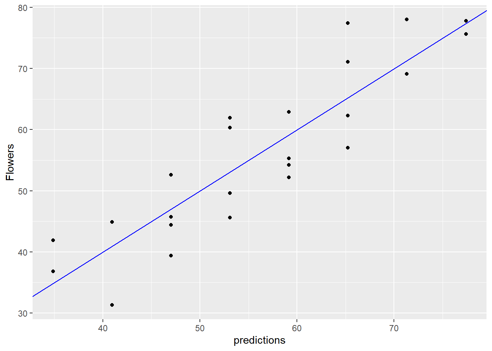
20.3.2 Interactions
20.3.2.1 Modeling an interaction
You will use interactions to model the effect of gender and gastric activity on alcohol metabolism.
The alcohol data frame has the columns:
Metabol: the alcohol metabolism rateGastric: the rate of gastric alcohol dehydrogenase activitySex: the sex of the drinker (MaleorFemale)
alcohol <- read_tsv("data/alcohol.txt")
glimpse(alcohol)## Rows: 32
## Columns: 5
## $ Subject <dbl> 1, 2, 3, 4, 5, 6, 7, 8, 9, 10, 11, 12, 13, 14, 15, 16, 17, 18,…
## $ Metabol <dbl> 0.6, 0.6, 1.5, 0.4, 0.1, 0.2, 0.3, 0.3, 0.4, 1.0, 1.1, 1.2, 1.…
## $ Gastric <dbl> 1.0, 1.6, 1.5, 2.2, 1.1, 1.2, 0.9, 0.8, 1.5, 0.9, 1.6, 1.7, 1.…
## $ Sex <chr> "Female", "Female", "Female", "Female", "Female", "Female", "F…
## $ Alcohol <chr> "Alcoholic", "Alcoholic", "Alcoholic", "Non-alcoholic", "Non-a…No interaction.
# Fit the main effects only model
model_add <- lm(Metabol ~ Gastric + Sex, alcohol)
summary(model_add)##
## Call:
## lm(formula = Metabol ~ Gastric + Sex, data = alcohol)
##
## Residuals:
## Min 1Q Median 3Q Max
## -2.278 -0.633 -0.097 0.578 4.570
##
## Coefficients:
## Estimate Std. Error t value Pr(>|t|)
## (Intercept) -1.947 0.520 -3.75 0.0008 ***
## Gastric 1.966 0.267 7.35 0.000000042 ***
## SexMale 1.617 0.511 3.16 0.0036 **
## ---
## Signif. codes: 0 '***' 0.001 '**' 0.01 '*' 0.05 '.' 0.1 ' ' 1
##
## Residual standard error: 1.33 on 29 degrees of freedom
## Multiple R-squared: 0.765, Adjusted R-squared: 0.749
## F-statistic: 47.3 on 2 and 29 DF, p-value: 0.000000000741Add Gastric as a main effect, plus interaction.
# Fit the interaction model
model_interaction <- lm(Metabol ~ Gastric + Gastric:Sex, alcohol)
summary(model_interaction)##
## Call:
## lm(formula = Metabol ~ Gastric + Gastric:Sex, data = alcohol)
##
## Residuals:
## Min 1Q Median 3Q Max
## -2.466 -0.509 0.014 0.566 4.067
##
## Coefficients:
## Estimate Std. Error t value Pr(>|t|)
## (Intercept) -0.750 0.531 -1.41 0.16824
## Gastric 1.149 0.345 3.33 0.00237 **
## Gastric:SexMale 1.042 0.241 4.32 0.00017 ***
## ---
## Signif. codes: 0 '***' 0.001 '**' 0.01 '*' 0.05 '.' 0.1 ' ' 1
##
## Residual standard error: 1.2 on 29 degrees of freedom
## Multiple R-squared: 0.808, Adjusted R-squared: 0.795
## F-statistic: 61 on 2 and 29 DF, p-value: 0.0000000000403An interaction appears to give a better fit to the data.
cross-validation
Because this dataset is small, we will use cross-validation to simulate making predictions on out-of-sample data.
# Create the formula with main effects only
fmla_add <- as.formula(Metabol ~ Gastric + Sex)
# Create the formula with interactions
fmla_interaction <- as.formula(Metabol ~ Gastric + Gastric:Sex)
# Create the splitting plan for 3-fold cross validation
set.seed(34245) # set the seed for reproducibility
splitPlan <- kWayCrossValidation(nrow(alcohol), 3, NULL, NULL)
# Sample code: Get cross-val predictions for main-effects only model
alcohol$pred_add <- 0 # initialize the prediction vector
for(i in 1:3) {
split <- splitPlan[[i]]
model_add <- lm(fmla_add, data = alcohol[split$train, ])
alcohol$pred_add[split$app] <- predict(model_add, newdata = alcohol[split$app, ])
}
# Get the cross-val predictions for the model with interactions
alcohol$pred_interaction <- 0 # initialize the prediction vector
for(i in 1:3) {
split <- splitPlan[[i]]
model_interaction <- lm(fmla_interaction, data = alcohol[split$train, ])
alcohol$pred_interaction[split$app] <- predict(model_interaction, newdata = alcohol[split$app, ])
}
# see dataset
head(alcohol)## # A tibble: 6 × 7
## Subject Metabol Gastric Sex Alcohol pred_add pred_interaction
## <dbl> <dbl> <dbl> <chr> <chr> <dbl> <dbl>
## 1 1 0.6 1 Female Alcoholic -0.209 0.416
## 2 2 0.6 1.6 Female Alcoholic 1.46 1.30
## 3 3 1.5 1.5 Female Alcoholic 1.26 1.18
## 4 4 0.4 2.2 Female Non-alcoholic 2.62 2.00
## 5 5 0.1 1.1 Female Non-alcoholic 0.224 0.338
## 6 6 0.2 1.2 Female Non-alcoholic 0.682 0.832Use tidyr’s gather() which takes multiple columns and collapses them into key-value pairs.
alcohol %>%
gather(key = modeltype, value = pred, pred_add, pred_interaction)## # A tibble: 64 × 7
## Subject Metabol Gastric Sex Alcohol modeltype pred
## <dbl> <dbl> <dbl> <chr> <chr> <chr> <dbl>
## 1 1 0.6 1 Female Alcoholic pred_add -0.209
## 2 2 0.6 1.6 Female Alcoholic pred_add 1.46
## 3 3 1.5 1.5 Female Alcoholic pred_add 1.26
## 4 4 0.4 2.2 Female Non-alcoholic pred_add 2.62
## 5 5 0.1 1.1 Female Non-alcoholic pred_add 0.224
## 6 6 0.2 1.2 Female Non-alcoholic pred_add 0.682
## 7 7 0.3 0.9 Female Non-alcoholic pred_add -0.396
## 8 8 0.3 0.8 Female Non-alcoholic pred_add -0.582
## 9 9 0.4 1.5 Female Non-alcoholic pred_add 1.04
## 10 10 1 0.9 Female Non-alcoholic pred_add -0.396
## # ℹ 54 more rows# Get RMSE
alcohol %>%
gather(key = modeltype, value = pred, pred_add, pred_interaction) %>%
mutate(residuals = Metabol - pred) %>%
group_by(modeltype) %>%
summarize(rmse = sqrt(mean(residuals^2)))## # A tibble: 2 × 2
## modeltype rmse
## <chr> <dbl>
## 1 pred_add 1.38
## 2 pred_interaction 1.26Cross-validation confirms that a model with interaction will likely give better predictions.
20.3.3 Transforming DV before modeling
Root Mean Squared Relative Error
RMS-relative error = \(\sqrt{\overline{(\frac{pred - y}{y})^2}}\)
Predicting log-outcome reduces RMS-relative error
But the model will o/en have larger RMSE
20.3.3.1 Relative error
You will compare relative error to absolute error.
The example (toy) dataset fdata includes the columns:
y: the true output to be predicted by some model; imagine it is the amount of money a customer will spend on a visit to your store.pred: the predictions of a model that predictsy.label: categorical: whetherycomes from a population that makessmallpurchases, orlargeones.
You want to know which model does “better”: the one predicting the small purchases, or the one predicting large ones.
fdata <- read_tsv("data/fdata.txt")
glimpse(fdata)## Rows: 100
## Columns: 3
## $ y <dbl> 9.15, 1.90, -3.86, 2.39, 1.54, 13.56, 10.20, 1.10, 3.94, 9.04, 1…
## $ pred <dbl> 6.43, 3.47, 1.59, 3.76, 9.51, 6.93, 8.19, 1.51, 8.99, 6.15, 8.50…
## $ label <chr> "small purchases", "small purchases", "small purchases", "small …# Examine the data: generate the summaries for the groups large and small:
fdata %>%
# group by small/large purchases
group_by(label) %>%
summarize(min = min(y), # min of y
mean = mean(y), # mean of y
max = max(y)) # max of y## # A tibble: 2 × 4
## label min mean max
## <chr> <dbl> <dbl> <dbl>
## 1 large purchases 96.1 606. 1102.
## 2 small purchases -5.89 6.48 18.6# Fill in the blanks to add error columns
fdata2 <- fdata %>%
# group by label
group_by(label) %>%
mutate(residual = y - pred, # Residual
relerr = residual / y) # Relative error
# Compare the rmse and rmse.rel of the large and small groups:
fdata2 %>%
group_by(label) %>%
summarize(rmse = sqrt(mean(residual^2)), # RMSE
rmse.rel = sqrt(mean(relerr^2))) # Root mean squared relative error## # A tibble: 2 × 3
## label rmse rmse.rel
## <chr> <dbl> <dbl>
## 1 large purchases 5.54 0.0147
## 2 small purchases 4.01 1.25Notice from this example how a model with larger RMSE might still be better, if relative errors are more important than absolute errors.
# Plot the predictions for both groups of purchases
ggplot(fdata2, aes(x = pred, y = y, color = label)) +
geom_point() +
geom_abline() +
facet_wrap(~ label, ncol = 1, scales = "free") +
ggtitle("Outcome vs prediction")
20.3.3.2 Modeling log-transformed output
You will practice modeling on log-transformed monetary output, and then transforming the “log-money” predictions back into monetary units.
Income2005 records subjects’ incomes in 2005, as well as the results of several aptitude tests taken by the subjects in 1981.
You will build a model of log(income) from the inputs, and then convert log(income) back into income.
# A vector contain "incometrain" and "incometest"
Income2005 <- load("data/Income.RData")
# Set up dataset
income_train <- incometrain
income_test <- incometest
# See data structure
glimpse(income_train)## Rows: 2,069
## Columns: 7
## $ Subject <int> 2, 6, 8, 9, 16, 17, 18, 20, 21, 22, 29, 34, 37, 38, 39, 41,…
## $ Arith <int> 8, 30, 13, 21, 17, 29, 30, 17, 29, 27, 12, 8, 21, 9, 16, 15…
## $ Word <int> 15, 35, 35, 28, 30, 33, 35, 28, 33, 31, 9, 20, 31, 17, 23, …
## $ Parag <int> 6, 15, 12, 10, 12, 13, 14, 14, 13, 14, 11, 8, 13, 9, 10, 11…
## $ Math <int> 6, 23, 4, 13, 17, 21, 23, 20, 25, 22, 9, 3, 12, 5, 8, 18, 8…
## $ AFQT <dbl> 6.84, 99.39, 44.02, 59.68, 50.28, 89.67, 95.98, 67.02, 88.4…
## $ Income2005 <int> 5500, 65000, 36000, 65000, 71000, 43000, 120000, 64000, 253…glimpse(income_test)## Rows: 515
## Columns: 7
## $ Subject <int> 7, 13, 47, 62, 73, 78, 89, 105, 106, 107, 129, 152, 160, 16…
## $ Arith <int> 14, 30, 26, 12, 18, 25, 24, 28, 30, 19, 28, 30, 28, 16, 21,…
## $ Word <int> 27, 29, 33, 25, 34, 35, 34, 32, 35, 31, 33, 33, 31, 25, 28,…
## $ Parag <int> 8, 13, 13, 10, 13, 14, 15, 14, 12, 11, 14, 14, 13, 13, 13, …
## $ Math <int> 11, 24, 16, 10, 18, 21, 17, 20, 23, 16, 23, 22, 19, 12, 16,…
## $ AFQT <dbl> 47.41, 72.31, 75.47, 36.38, 81.53, 85.35, 84.98, 81.79, 87.…
## $ Income2005 <int> 19000, 8000, 66309, 30000, 186135, 14657, 62000, 40000, 105…# Examine Income2005 in the training set
summary(income_train$Income2005)## Min. 1st Qu. Median Mean 3rd Qu. Max.
## 63 23000 39000 49894 61500 703637Plot outcome variable.
ggplot(income_train, aes(Income2005)) +
geom_histogram()## `stat_bin()` using `bins = 30`. Pick better
## value with `binwidth`.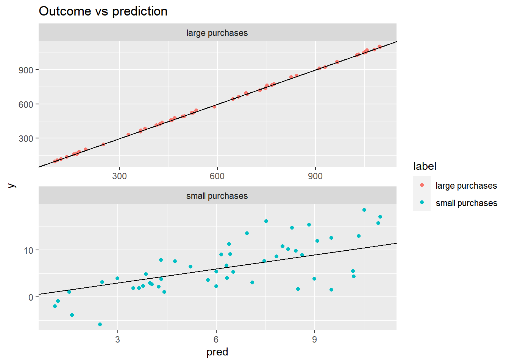
Fit log transform model and predict on testing data.
# Fit the linear model
model.log <- lm(log(Income2005) ~ Arith + Word + Parag + Math + AFQT, income_train)
# Make predictions on income_test
income_test$logpred <- predict(model.log, income_test)
summary(income_test$logpred)## Min. 1st Qu. Median Mean 3rd Qu. Max.
## 9.77 10.13 10.42 10.42 10.70 11.01Reverse the log transformation to put the predictions into “monetary units”.
# Convert the predictions to monetary units
income_test$pred.income <- exp(income_test$logpred)
summary(income_test$pred.income)## Min. 1st Qu. Median Mean 3rd Qu. Max.
## 17432 25167 33615 35363 44566 60217Plot a scatter plot of predicted income vs income on the test set.
# Plot predicted income (x axis) vs income
ggplot(income_test, aes(x = pred.income, y = Income2005)) +
geom_point() +
geom_abline(color = "blue")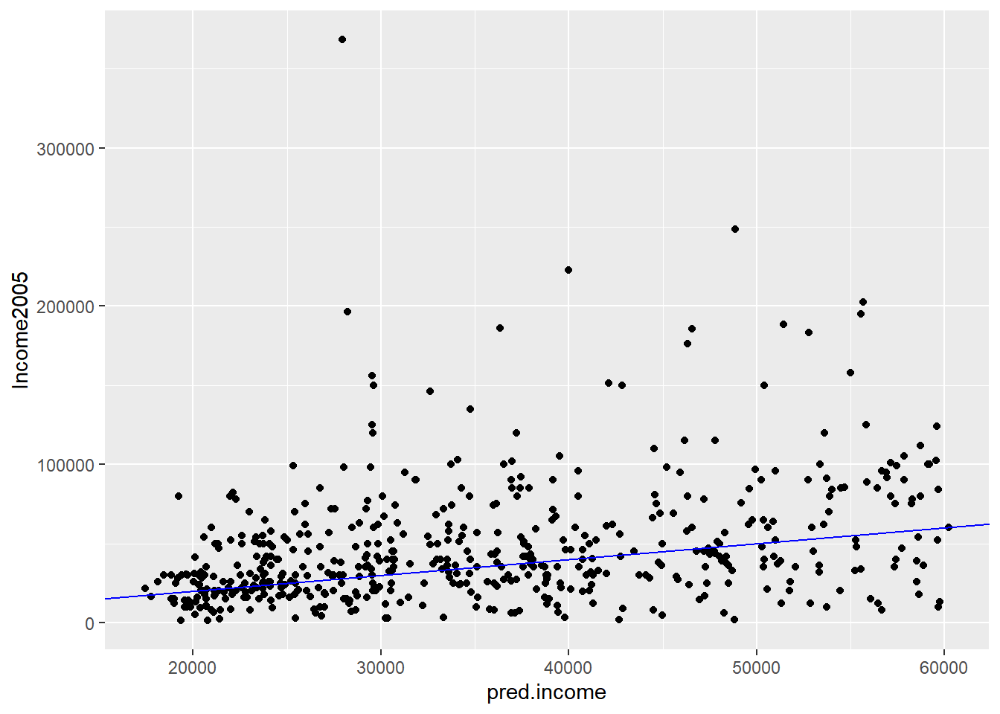
Remember that when you transform the output before modeling, you have to ‘reverse transform’ the resulting predictions after applying the model.
20.3.3.3 Comparing RMSE and RMS Relative Error
In this exercise, you will show that log-transforming a monetary output before modeling improves mean relative error (but increases RMSE) compared to modeling the monetary output directly.
Compare the results of model.log from the previous exercise to a model (model.abs) that directly fits income.
# a model that directly fits income to the inputs
model.abs <- lm(formula = Income2005 ~ Arith + Word + Parag + Math + AFQT, data = income_train)
summary(model.abs)##
## Call:
## lm(formula = Income2005 ~ Arith + Word + Parag + Math + AFQT,
## data = income_train)
##
## Residuals:
## Min 1Q Median 3Q Max
## -78728 -24137 -6979 11964 648573
##
## Coefficients:
## Estimate Std. Error t value Pr(>|t|)
## (Intercept) 17517 6420 2.73 0.0064 **
## Arith 1552 303 5.12 0.00000034 ***
## Word -132 265 -0.50 0.6175
## Parag -1155 618 -1.87 0.0619 .
## Math 726 372 1.95 0.0513 .
## AFQT 178 144 1.23 0.2173
## ---
## Signif. codes: 0 '***' 0.001 '**' 0.01 '*' 0.05 '.' 0.1 ' ' 1
##
## Residual standard error: 45500 on 2063 degrees of freedom
## Multiple R-squared: 0.116, Adjusted R-squared: 0.114
## F-statistic: 54.4 on 5 and 2063 DF, p-value: <0.0000000000000002# Add predictions to the test set
income_test <- income_test %>%
# predictions from model.abs
mutate(pred.absmodel = predict(model.abs, income_test),
# predictions from model.log
pred.logmodel = exp(predict(model.log, income_test)))
head(income_test)## Subject Arith Word Parag Math AFQT Income2005 logpred pred.income
## 3 7 14 27 8 11 47.4 19000 10.3 28644
## 6 13 30 29 13 24 72.3 8000 10.9 56646
## 22 47 26 33 13 16 75.5 66309 10.7 44468
## 27 62 12 25 10 10 36.4 30000 10.1 25462
## 30 73 18 34 13 18 81.5 186135 10.5 36356
## 31 78 25 35 14 21 85.3 14657 10.8 46948
## pred.absmodel pred.logmodel
## 3 42844 28644
## 6 75499 56646
## 22 63519 44468
## 27 35008 25462
## 30 53495 36356
## 31 65929 46948# Gather the predictions and calculate residuals and relative error
income_long <- income_test %>%
gather(key = modeltype, value = pred, pred.absmodel, pred.logmodel) %>%
mutate(residual = Income2005 - pred, # residuals
relerr = residual / Income2005) # relative error
head(income_long)## Subject Arith Word Parag Math AFQT Income2005 logpred pred.income
## 1 7 14 27 8 11 47.4 19000 10.3 28644
## 2 13 30 29 13 24 72.3 8000 10.9 56646
## 3 47 26 33 13 16 75.5 66309 10.7 44468
## 4 62 12 25 10 10 36.4 30000 10.1 25462
## 5 73 18 34 13 18 81.5 186135 10.5 36356
## 6 78 25 35 14 21 85.3 14657 10.8 46948
## modeltype pred residual relerr
## 1 pred.absmodel 42844 -23844 -1.2550
## 2 pred.absmodel 75499 -67499 -8.4374
## 3 pred.absmodel 63519 2790 0.0421
## 4 pred.absmodel 35008 -5008 -0.1669
## 5 pred.absmodel 53495 132640 0.7126
## 6 pred.absmodel 65929 -51272 -3.4981# Calculate RMSE and relative RMSE and compare
income_long %>%
# group by modeltype
group_by(modeltype) %>%
# RMSE
summarize(rmse = sqrt(mean(residual^2)),
# Root mean squared relative error
rmse.rel = sqrt(mean(relerr^2))) ## # A tibble: 2 × 3
## modeltype rmse rmse.rel
## <chr> <dbl> <dbl>
## 1 pred.absmodel 37448. 3.18
## 2 pred.logmodel 39235. 2.22You’ve seen how modeling log(income) can reduce the relative error of the fit, at the cost of increased RMSE. Which tradeoff to make depends on the goals of your project.
20.3.4 Transforming IV before modeling
20.3.4.1 Input transforms: the “hockey stick”
In this exercise, we will build a model to predict price from a measure of the house’s size. The houseprice dataset, has the columns:
price: house price in units of $1000size: surface area
houseprice <- read_rds("data/houseprice.rds")
glimpse(houseprice)## Rows: 40
## Columns: 2
## $ size <int> 72, 98, 92, 90, 44, 46, 90, 150, 94, 90, 90, 66, 142, 74, 86, 46…
## $ price <int> 156, 153, 230, 152, 42, 157, 113, 573, 202, 261, 175, 212, 486, …A scatterplot of the data shows that the data is quite non-linear: a sort of “hockey-stick” where price is fairly flat for smaller houses, but rises steeply as the house gets larger.
Quadratics and tritics are often good functional forms to express hockey-stick like relationships.
ggplot(houseprice, aes(size, price)) +
geom_point() +
geom_smooth(se = F)## `geom_smooth()` using method = 'loess' and
## formula = 'y ~ x'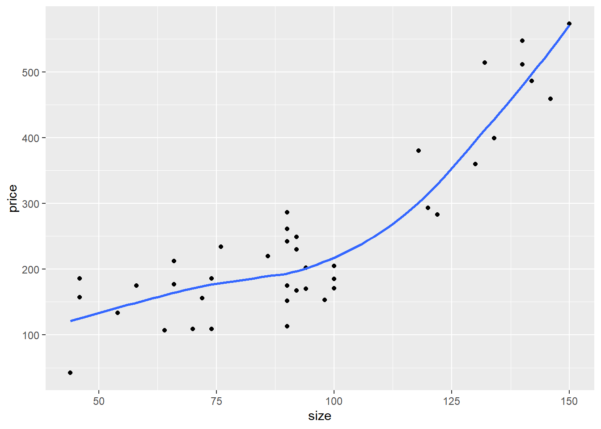
You will fit a model to predict price as a function of the squared size, and look at its fit on the training data.
# Fit a model of price as a function of squared size
# Because ^ is also a symbol to express interactions, use the function I() to treat the expression x^2 “as is”: that is, as the square of x rather than the interaction of x with itself.
model_sqr <- lm(price ~ I(size^2), houseprice)
# Fit a model of price as a linear function of size
model_lin <- lm(price ~ size, houseprice)# Make predictions and compare
houseprice %>%
# predictions from linear model
mutate(pred_lin = predict(model_lin, houseprice),
# predictions from quadratic model
pred_sqr = predict(model_sqr, houseprice)) %>%
gather(key = modeltype, value = pred, pred_lin, pred_sqr)## size price modeltype pred
## 1 72 156 pred_lin 160.8
## 2 98 153 pred_lin 263.9
## 3 92 230 pred_lin 240.1
## 4 90 152 pred_lin 232.2
## 5 44 42 pred_lin 49.8
## 6 46 157 pred_lin 57.7
## 7 90 113 pred_lin 232.2
## 8 150 573 pred_lin 470.1
## 9 94 202 pred_lin 248.0
## 10 90 261 pred_lin 232.2
## 11 90 175 pred_lin 232.2
## 12 66 212 pred_lin 137.0
## 13 142 486 pred_lin 438.4
## 14 74 109 pred_lin 168.7
## 15 86 220 pred_lin 216.3
## 16 46 186 pred_lin 57.7
## 17 54 133 pred_lin 89.4
## 18 130 360 pred_lin 390.8
## 19 122 283 pred_lin 359.1
## 20 118 380 pred_lin 343.2
## 21 100 185 pred_lin 271.8
## 22 74 186 pred_lin 168.7
## 23 146 459 pred_lin 454.2
## 24 92 167 pred_lin 240.1
## 25 100 171 pred_lin 271.8
## 26 140 547 pred_lin 430.4
## 27 94 170 pred_lin 248.0
## 28 90 286 pred_lin 232.2
## 29 120 293 pred_lin 351.1
## 30 70 109 pred_lin 152.9
## 31 100 205 pred_lin 271.8
## 32 132 514 pred_lin 398.7
## 33 58 175 pred_lin 105.3
## 34 92 249 pred_lin 240.1
## 35 76 234 pred_lin 176.7
## 36 90 242 pred_lin 232.2
## 37 66 177 pred_lin 137.0
## 38 134 399 pred_lin 406.7
## 39 140 511 pred_lin 430.4
## 40 64 107 pred_lin 129.1
## 41 72 156 pred_sqr 153.8
## 42 98 153 pred_sqr 246.5
## 43 92 230 pred_sqr 222.6
## 44 90 152 pred_sqr 214.9
## 45 44 42 pred_sqr 85.6
## 46 46 157 pred_sqr 89.4
## 47 90 113 pred_sqr 214.9
## 48 150 573 pred_sqr 517.0
## 49 94 202 pred_sqr 230.4
## 50 90 261 pred_sqr 214.9
## 51 90 175 pred_sqr 214.9
## 52 66 212 pred_sqr 136.4
## 53 142 486 pred_sqr 468.0
## 54 74 109 pred_sqr 159.9
## 55 86 220 pred_sqr 200.2
## 56 46 186 pred_sqr 89.4
## 57 54 133 pred_sqr 106.2
## 58 130 360 pred_sqr 399.5
## 59 122 283 pred_sqr 357.2
## 60 118 380 pred_sqr 337.1
## 61 100 185 pred_sqr 254.8
## 62 74 186 pred_sqr 159.9
## 63 146 459 pred_sqr 492.1
## 64 92 167 pred_sqr 222.6
## 65 100 171 pred_sqr 254.8
## 66 140 547 pred_sqr 456.1
## 67 94 170 pred_sqr 230.4
## 68 90 286 pred_sqr 214.9
## 69 120 293 pred_sqr 347.1
## 70 70 109 pred_sqr 147.8
## 71 100 205 pred_sqr 254.8
## 72 132 514 pred_sqr 410.5
## 73 58 175 pred_sqr 115.6
## 74 92 249 pred_sqr 222.6
## 75 76 234 pred_sqr 166.2
## 76 90 242 pred_sqr 214.9
## 77 66 177 pred_sqr 136.4
## 78 134 399 pred_sqr 421.7
## 79 140 511 pred_sqr 456.1
## 80 64 107 pred_sqr 130.9Graphically compare the predictions of the two models to the data.
houseprice %>%
# predictions from linear model
mutate(pred_lin = predict(model_lin, houseprice),
# predictions from quadratic model
pred_sqr = predict(model_sqr, houseprice)) %>%
gather(key = modeltype, value = pred, pred_lin, pred_sqr) %>%
ggplot(aes(x = size)) +
# actual prices
geom_point(aes(y = price)) +
# the predictions
geom_line(aes(y = pred, color = modeltype)) +
scale_color_brewer(palette = "Dark2")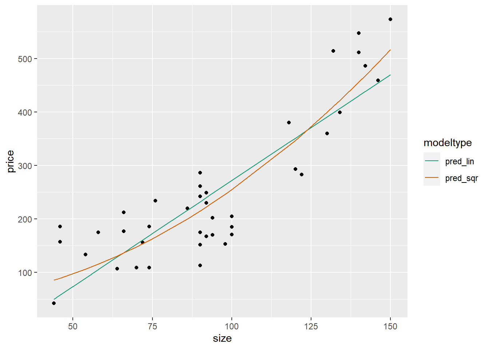
In this exercise, you will confirm whether the quadratic model would perform better on out-of-sample data. Since this dataset is small, you will use cross-validation.
# Create a splitting plan for 3-fold cross validation
set.seed(34245) # set the seed for reproducibility
splitPlan <- kWayCrossValidation(nrow(houseprice), 3, NULL, NULL)
# Sample code: get cross-val predictions for price ~ size
houseprice$pred_lin <- 0 # initialize the prediction vector
for(i in 1:3) {
split <- splitPlan[[i]]
model_lin <- lm(price ~ size, data = houseprice[split$train,])
houseprice$pred_lin[split$app] <- predict(model_lin, newdata = houseprice[split$app,])
}
# Get cross-val predictions for price as a function of size^2 (use fmla_sqr)
houseprice$pred_sqr <- 0 # initialize the prediction vector
for(i in 1:3) {
split <- splitPlan[[i]]
model_sqr <- lm(price ~ I(size^2), data = houseprice[split$train, ])
houseprice$pred_sqr[split$app] <- predict(model_sqr, newdata = houseprice[split$app, ])
}
# Gather the predictions and calculate the residuals
houseprice_long <- houseprice %>%
gather(key = modeltype, value = pred, pred_lin, pred_sqr) %>%
mutate(residuals = price - pred)
# Compare the cross-validated RMSE for the two models
houseprice_long %>%
group_by(modeltype) %>% # group by modeltype
summarize(rmse = sqrt(mean(residuals^2)))## # A tibble: 2 × 2
## modeltype rmse
## <chr> <dbl>
## 1 pred_lin 71.8
## 2 pred_sqr 60.5You’ve confirmed that the quadratic input tranformation improved the model.
20.4 Dealing with Non-Linear Responses
20.4.1 Logistic regression to predict probabilities
Evaluating a logistic regression model
\(pseudoR^2 = 1 - \frac{deviance}{null.deviance}\)
Deviance: analogous to variance (RSS)
Null deviance: Similar to \(SS_{Tot}\)
\(pseudoR^2\) : Deviance explained, close to 1 is the better
20.4.1.1 Fit a logistic regression model
You will estimate the probability that a sparrow survives a severe winter storm, based on physical characteristics of the sparrow.
sparrow dataset has columns:
status: outcome variable, “Survived” or “Perished”total_length: length of the bird from tip of beak to tip of tail (mm)weight: in gramshumerus: length of humerus (“upper arm bone” that connects the wing to the body) (inches)
sparrow <- read_rds("data/sparrow.rds")
glimpse(sparrow)## Rows: 87
## Columns: 11
## $ status <fct> Survived, Survived, Survived, Survived, Survived, Survive…
## $ age <chr> "adult", "adult", "adult", "adult", "adult", "adult", "ad…
## $ total_length <int> 154, 160, 155, 154, 156, 161, 157, 159, 158, 158, 160, 16…
## $ wingspan <int> 241, 252, 243, 245, 247, 253, 251, 247, 247, 252, 252, 25…
## $ weight <dbl> 24.5, 26.9, 26.9, 24.3, 24.1, 26.5, 24.6, 24.2, 23.6, 26.…
## $ beak_head <dbl> 31.2, 30.8, 30.6, 31.7, 31.5, 31.8, 31.1, 31.4, 29.8, 32.…
## $ humerus <dbl> 0.69, 0.74, 0.73, 0.74, 0.71, 0.78, 0.74, 0.73, 0.70, 0.7…
## $ femur <dbl> 0.67, 0.71, 0.70, 0.69, 0.71, 0.74, 0.74, 0.72, 0.67, 0.7…
## $ legbone <dbl> 1.02, 1.18, 1.15, 1.15, 1.13, 1.14, 1.15, 1.13, 1.08, 1.1…
## $ skull <dbl> 0.59, 0.60, 0.60, 0.58, 0.57, 0.61, 0.61, 0.61, 0.60, 0.6…
## $ sternum <dbl> 0.83, 0.84, 0.85, 0.84, 0.82, 0.89, 0.86, 0.79, 0.82, 0.8…# Create the survived column
sparrow$survived <- ifelse(sparrow$status == "Survived", TRUE, FALSE)
head(sparrow)## status age total_length wingspan weight beak_head humerus femur legbone
## 1 Survived adult 154 241 24.5 31.2 0.69 0.67 1.02
## 2 Survived adult 160 252 26.9 30.8 0.74 0.71 1.18
## 3 Survived adult 155 243 26.9 30.6 0.73 0.70 1.15
## 4 Survived adult 154 245 24.3 31.7 0.74 0.69 1.15
## 5 Survived adult 156 247 24.1 31.5 0.71 0.71 1.13
## 6 Survived adult 161 253 26.5 31.8 0.78 0.74 1.14
## skull sternum survived
## 1 0.59 0.83 TRUE
## 2 0.60 0.84 TRUE
## 3 0.60 0.85 TRUE
## 4 0.58 0.84 TRUE
## 5 0.57 0.82 TRUE
## 6 0.61 0.89 TRUE# Fit the logistic regression model
sparrow_model <- glm(survived ~ total_length + weight + humerus,
data = sparrow,
family = "binomial")
# Call summary
summary(sparrow_model)##
## Call:
## glm(formula = survived ~ total_length + weight + humerus, family = "binomial",
## data = sparrow)
##
## Coefficients:
## Estimate Std. Error z value Pr(>|z|)
## (Intercept) 46.881 16.963 2.76 0.00571 **
## total_length -0.543 0.141 -3.86 0.00011 ***
## weight -0.569 0.277 -2.05 0.04006 *
## humerus 75.461 19.159 3.94 0.000082 ***
## ---
## Signif. codes: 0 '***' 0.001 '**' 0.01 '*' 0.05 '.' 0.1 ' ' 1
##
## (Dispersion parameter for binomial family taken to be 1)
##
## Null deviance: 118.008 on 86 degrees of freedom
## Residual deviance: 75.094 on 83 degrees of freedom
## AIC: 83.09
##
## Number of Fisher Scoring iterations: 5# Call glance
perf <- glance(sparrow_model)
perf## # A tibble: 1 × 8
## null.deviance df.null logLik AIC BIC deviance df.residual nobs
## <dbl> <int> <dbl> <dbl> <dbl> <dbl> <int> <int>
## 1 118. 86 -37.5 83.1 93.0 75.1 83 87# Calculate pseudo-R-squared
(pseudoR2 <- 1 - (perf$deviance / perf$null.deviance))## [1] 0.36420.4.1.2 Predict
Recall that when calling predict() to get the predicted probabilities from a glm() model, you must specify that you want the response.
predict(model, type = "response")
You will also use the GainCurvePlot() function to plot the gain curve from the model predictions. If the model’s gain curve is close to the ideal (“wizard”) gain curve, then the model sorted the sparrows well.
# Make predictions
sparrow$pred <- predict(sparrow_model, type = "response")
# Look at gain curve
GainCurvePlot(sparrow, "pred", "survived", "sparrow survival model")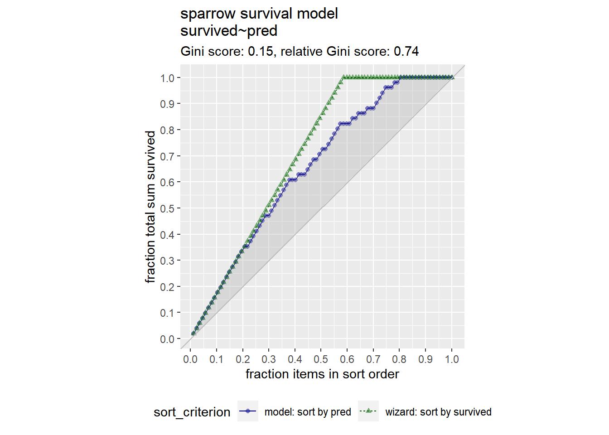
You see from the gain curve that the model follows the wizard curve for about the first 30% of the data, identifying about 45% of the surviving sparrows with only a few false positives.
20.4.2 Poisson and quasipoisson regression to predict counts
Predicting Counts: counts, integers in range [0, ∞]
Poisson/Quasipoisson Regression
glm(formula, data, family = "poisson" / "quasipoisson")
outcome: integer
counts: e.g. number of traffic tickets a driver gets
rates: e.g. number of website hits/day
prediction: expected rate or intensity (not integral)
- expected : traffic tickets; expected hits/day
Poisson vs. Quasipoisson
Poisson assumes that
mean(y) = var(y)If
var(y)much different frommean(y)⟶ use quasipoissonIf
var(y)much close tomean(y)⟶ use poisson
Evaluate the model
\(pseudoR^2\)
RMSE
20.4.2.1 Fit a model to predict counts
You will build a model to predict the number of bikes rented in an hour as a function of the weather, the type of day (holiday, working day, or weekend), and the time of day.
You will train the model on data from the month of July. The data frame has the columns:
cnt: the number of bikes rented in that hour (the outcome)hr: the hour of the day (0-23, as a factor)holiday: TRUE/FALSEworkingday: TRUE if neither a holiday nor a weekend, else FALSEweathersit: categorical, “Clear to partly cloudy”/“Light Precipitation”/“Misty”temp: normalized temperature in Celsiusatemp: normalized “feeling” temperature in Celsiushum: normalized humiditywindspeed: normalized windspeedinstant: the time index -- number of hours since beginning of dataset (not a variable)mnthandyr: month and year indices (not variables)
bikes <- load("data/Bikes.RData")
str(bikesJuly)## 'data.frame': 744 obs. of 12 variables:
## $ hr : Factor w/ 24 levels "0","1","2","3",..: 1 2 3 4 5 6 7 8 9 10 ...
## $ holiday : logi FALSE FALSE FALSE FALSE FALSE FALSE ...
## $ workingday: logi FALSE FALSE FALSE FALSE FALSE FALSE ...
## $ weathersit: chr "Clear to partly cloudy" "Clear to partly cloudy" "Clear to partly cloudy" "Clear to partly cloudy" ...
## $ temp : num 0.76 0.74 0.72 0.72 0.7 0.68 0.7 0.74 0.78 0.82 ...
## $ atemp : num 0.727 0.697 0.697 0.712 0.667 ...
## $ hum : num 0.66 0.7 0.74 0.84 0.79 0.79 0.79 0.7 0.62 0.56 ...
## $ windspeed : num 0 0.1343 0.0896 0.1343 0.194 ...
## $ cnt : int 149 93 90 33 4 10 27 50 142 219 ...
## $ instant : int 13004 13005 13006 13007 13008 13009 13010 13011 13012 13013 ...
## $ mnth : int 7 7 7 7 7 7 7 7 7 7 ...
## $ yr : int 1 1 1 1 1 1 1 1 1 1 ...Should you use poisson or quasipoisson regression?
# Calculate the mean and variance of the outcome
c(mean_bike = mean(bikesJuly$cnt), var_bike = var(bikesJuly$cnt))## mean_bike var_bike
## 274 45864Since mean and var are much different, use quasipoisson.
# Fit the model
bike_model <- glm(cnt ~ hr + holiday + workingday + weathersit + temp + atemp + hum + windspeed,
bikesJuly,
family = "quasipoisson")
# Call glance
(perf <- glance(bike_model))## # A tibble: 1 × 8
## null.deviance df.null logLik AIC BIC deviance df.residual nobs
## <dbl> <int> <dbl> <dbl> <dbl> <dbl> <int> <int>
## 1 133365. 743 NA NA NA 28775. 712 744# Calculate pseudo-R-squared
(pseudoR2 <- 1 - (perf$deviance / perf$null.deviance))## [1] 0.784As with a logistic model, you hope for a \(pseudoR^2\) near 1.
20.4.2.2 Predict on new data
You will use the model you built in the previous exercise to make predictions for the month of August. The dataset bikesAugust has the same columns as bikesJuly.
str(bikesAugust)## 'data.frame': 744 obs. of 12 variables:
## $ hr : Factor w/ 24 levels "0","1","2","3",..: 1 2 3 4 5 6 7 8 9 10 ...
## $ holiday : logi FALSE FALSE FALSE FALSE FALSE FALSE ...
## $ workingday: logi TRUE TRUE TRUE TRUE TRUE TRUE ...
## $ weathersit: chr "Clear to partly cloudy" "Clear to partly cloudy" "Clear to partly cloudy" "Clear to partly cloudy" ...
## $ temp : num 0.68 0.66 0.64 0.64 0.64 0.64 0.64 0.64 0.66 0.68 ...
## $ atemp : num 0.636 0.606 0.576 0.576 0.591 ...
## $ hum : num 0.79 0.83 0.83 0.83 0.78 0.78 0.78 0.83 0.78 0.74 ...
## $ windspeed : num 0.1642 0.0896 0.1045 0.1045 0.1343 ...
## $ cnt : int 47 33 13 7 4 49 185 487 681 350 ...
## $ instant : int 13748 13749 13750 13751 13752 13753 13754 13755 13756 13757 ...
## $ mnth : int 8 8 8 8 8 8 8 8 8 8 ...
## $ yr : int 1 1 1 1 1 1 1 1 1 1 ...Recall that you must specify type = "response" with predict() when predicting counts from a glm poisson or quasipoisson model.
# Make predictions on August data
bikesAugust$pred <- predict(bike_model,
newdata = bikesAugust,
type = "response")
# Calculate the RMSE
bikesAugust %>%
mutate(residual = cnt - pred) %>%
summarize(rmse = sqrt(mean(residual^2)))## rmse
## 1 113# Plot predictions vs cnt (pred on x-axis)
ggplot(bikesAugust, aes(x = pred, y = cnt)) +
geom_point() +
geom_abline(color = "darkblue")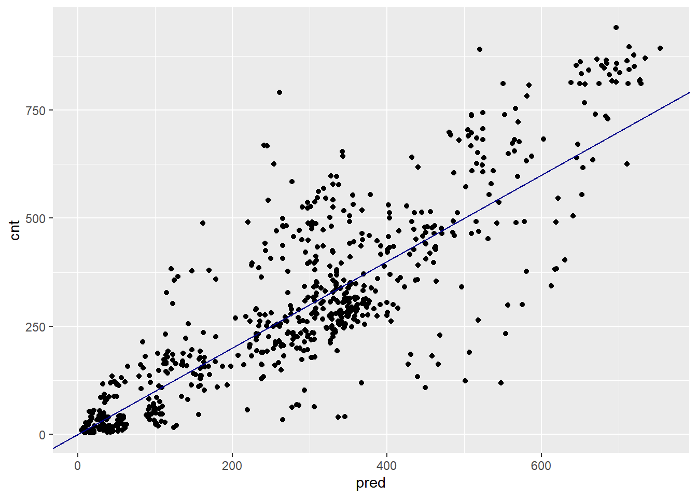
(Quasi)poisson models predict non-negative rates, making them useful for count or frequency data.
20.4.2.3 Visualize the predictions
Since the bike rental data is time series data, you might be interested in how the model performs as a function of time. In this exercise, you will compare the predictions and actual rentals on an hourly basis, for the first 14 days of August.
head(bikesAugust)## hr holiday workingday weathersit temp atemp hum windspeed cnt
## 1 0 FALSE TRUE Clear to partly cloudy 0.68 0.636 0.79 0.1642 47
## 2 1 FALSE TRUE Clear to partly cloudy 0.66 0.606 0.83 0.0896 33
## 3 2 FALSE TRUE Clear to partly cloudy 0.64 0.576 0.83 0.1045 13
## 4 3 FALSE TRUE Clear to partly cloudy 0.64 0.576 0.83 0.1045 7
## 5 4 FALSE TRUE Misty 0.64 0.591 0.78 0.1343 4
## 6 5 FALSE TRUE Misty 0.64 0.591 0.78 0.1343 49
## instant mnth yr pred
## 1 13748 8 1 94.96
## 2 13749 8 1 51.74
## 3 13750 8 1 37.98
## 4 13751 8 1 17.58
## 5 13752 8 1 9.36
## 6 13753 8 1 33.20The time index, instant counts the number of observations since the beginning of data collection. The sample code converts the instants to daily units, starting from 0.
bikesAugust %>%
# set start to 0, convert unit to days
mutate(instant = (instant - min(instant))/24) %>%
# gather cnt and pred into a value column
gather(key = valuetype, value = value, cnt, pred) %>%
filter(instant < 14) %>%
select(instant, valuetype, value) %>%
head()## instant valuetype value
## 1 0.0000 cnt 47
## 2 0.0417 cnt 33
## 3 0.0833 cnt 13
## 4 0.1250 cnt 7
## 5 0.1667 cnt 4
## 6 0.2083 cnt 49# Plot predictions and cnt by date/time
quasipoisson_plot <- bikesAugust %>%
mutate(instant = (instant - min(instant))/24) %>%
gather(key = valuetype, value = value, cnt, pred) %>%
# restric to first 14 days
filter(instant < 14) %>%
# plot value by instant
ggplot(aes(x = instant, y = value,
color = valuetype, linetype = valuetype)) +
geom_point() +
geom_line() +
scale_x_continuous("Day", breaks = 0:14, labels = 0:14) +
scale_color_brewer(palette = "Dark2") +
ggtitle("Predicted August bike rentals, Quasipoisson model")
quasipoisson_plot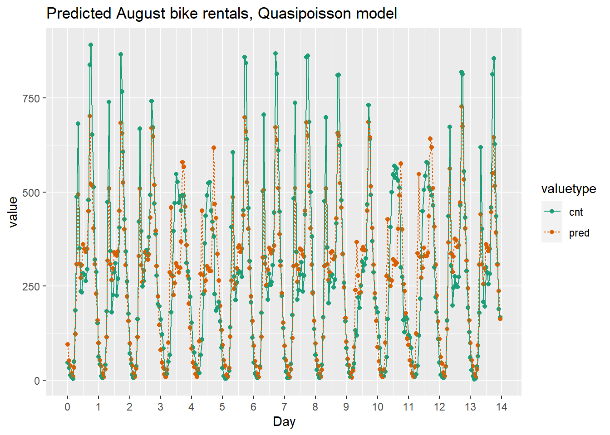
This model mostly identifies the slow and busy hours of the day, although it often underestimates peak demand.
20.4.3 GAM to learn non-linear transforms
Generalized Additive Models (GAMs)
With GAM, the outcome depends additively on unknown smooth functions of the input variables. Automatically learn input variable transformations.
Using GAM to learn the transformations is useful when you don’t have the domain knowledge to tell you the correct transform.
mgcv package:
gam(y ~ s(x1) + x2..., family, data)
family
gaussian (default): “regular” regression
binomial: probabilities
poisson/quasipoisson: counts
s()designates that variable should be non-linear- Use
s()with continuous variables
- Use
Best for larger datasets
20.4.3.1 Model with GAM
You will model the average leaf weight on a soybean plant as a function of time (after planting). As you will see, the soybean plant doesn’t grow at a steady rate, but rather has a “growth spurt” that eventually tapers off. Hence, leaf weight is not well described by a linear model.
soybean <- load("data/Soybean.RData")
glimpse(soybean_train)## Rows: 330
## Columns: 5
## $ Plot <ord> 1988F1, 1988F1, 1988F1, 1988F1, 1988F1, 1988F1, 1988F1, 1988F2…
## $ Variety <fct> F, F, F, F, F, F, F, F, F, F, F, F, F, F, F, F, F, F, F, F, F,…
## $ Year <fct> 1988, 1988, 1988, 1988, 1988, 1988, 1988, 1988, 1988, 1988, 19…
## $ Time <dbl> 14, 21, 28, 35, 49, 63, 77, 21, 28, 35, 49, 56, 70, 14, 21, 28…
## $ weight <dbl> 0.106, 0.261, 0.666, 2.110, 6.230, 13.350, 17.751, 0.269, 0.77…Does the relationship look linear?
# Plot weight vs Time (Time on x axis)
ggplot(soybean_train, aes(x = Time, y = weight)) +
geom_point() 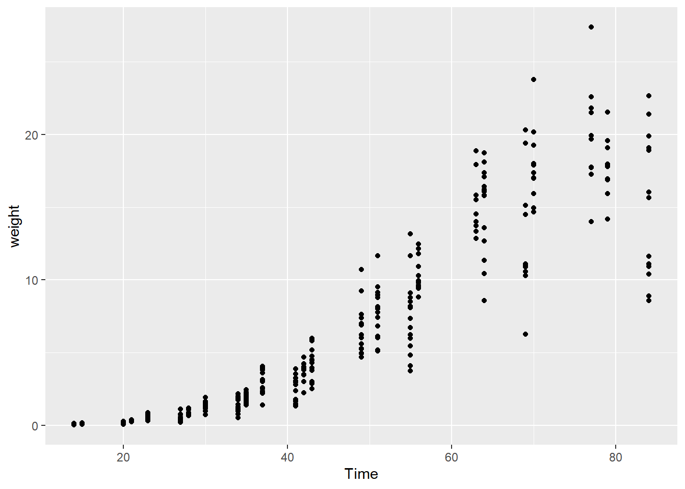
Fit a generalized additive model.
# Load the package mgcv
library(mgcv)
# Fit the GAM Model
model.gam <- gam(weight ~ s(Time), data = soybean_train, family = gaussian)
# Call summary() on model.gam and look for R-squared
summary(model.gam)##
## Family: gaussian
## Link function: identity
##
## Formula:
## weight ~ s(Time)
##
## Parametric coefficients:
## Estimate Std. Error t value Pr(>|t|)
## (Intercept) 6.164 0.114 53.9 <0.0000000000000002 ***
## ---
## Signif. codes: 0 '***' 0.001 '**' 0.01 '*' 0.05 '.' 0.1 ' ' 1
##
## Approximate significance of smooth terms:
## edf Ref.df F p-value
## s(Time) 8.5 8.93 338 <0.0000000000000002 ***
## ---
## Signif. codes: 0 '***' 0.001 '**' 0.01 '*' 0.05 '.' 0.1 ' ' 1
##
## R-sq.(adj) = 0.902 Deviance explained = 90.4%
## GCV = 4.4395 Scale est. = 4.3117 n = 330The “deviance explained” reports the model’s unadjusted \(R^2\)
# linear model
model.lin <- lm(formula = weight ~ Time, soybean_train)
# Call summary() on model.lin and look for R-squared
summary(model.lin)##
## Call:
## lm(formula = weight ~ Time, data = soybean_train)
##
## Residuals:
## Min 1Q Median 3Q Max
## -9.393 -1.710 -0.391 1.906 11.438
##
## Coefficients:
## Estimate Std. Error t value Pr(>|t|)
## (Intercept) -6.55928 0.35853 -18.3 <0.0000000000000002 ***
## Time 0.29209 0.00744 39.2 <0.0000000000000002 ***
## ---
## Signif. codes: 0 '***' 0.001 '**' 0.01 '*' 0.05 '.' 0.1 ' ' 1
##
## Residual standard error: 2.78 on 328 degrees of freedom
## Multiple R-squared: 0.824, Adjusted R-squared: 0.824
## F-statistic: 1.54e+03 on 1 and 328 DF, p-value: <0.0000000000000002For this data, the GAM appears to fit the data better than a linear model, as measured by the R-squared.
See the derived relationship between Time and weight.
# Call plot() on model.gam
plot(model.gam)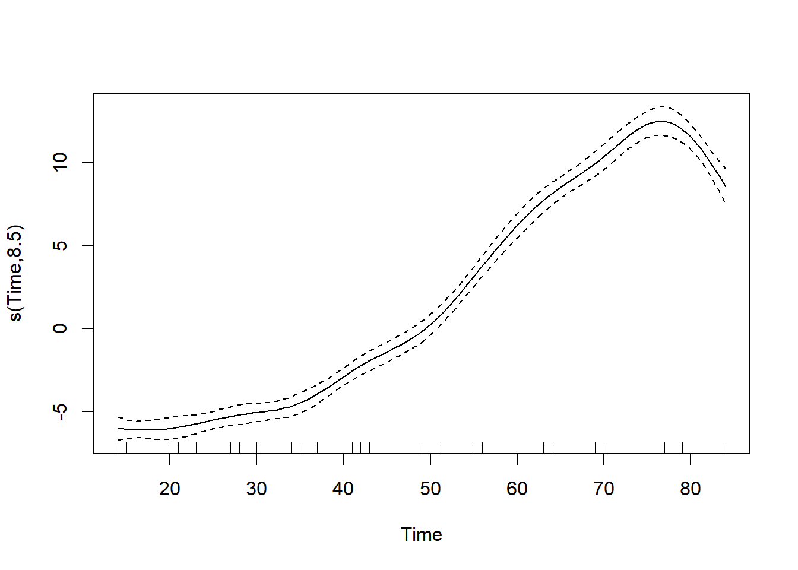
20.4.3.2 Predict with on test data
glimpse(soybean_test)## Rows: 82
## Columns: 5
## $ Plot <ord> 1988F1, 1988F1, 1988F1, 1988F2, 1988F2, 1988F2, 1988F3, 1988F3…
## $ Variety <fct> F, F, F, F, F, F, F, F, F, F, F, F, F, F, F, F, P, P, P, P, P,…
## $ Year <fct> 1988, 1988, 1988, 1988, 1988, 1988, 1988, 1988, 1988, 1988, 19…
## $ Time <dbl> 42, 56, 70, 14, 42, 77, 49, 63, 14, 35, 63, 42, 14, 21, 28, 70…
## $ weight <dbl> 3.560, 8.710, 16.342, 0.104, 2.930, 17.747, 6.130, 18.080, 0.1…For GAM models, the predict() method returns a matrix, so use as.numeric() to convert the matrix to a vector.
# Get predictions from linear model
soybean_test$pred.lin <- predict(model.lin, newdata = soybean_test)
# Get predictions from gam model
soybean_test$pred.gam <- as.numeric(predict(model.gam, newdata = soybean_test))
head(soybean_test)## Grouped Data: weight ~ Time | Plot
## Plot Variety Year Time weight pred.lin pred.gam
## 5 1988F1 F 1988 42 3.560 5.71 3.94
## 7 1988F1 F 1988 56 8.710 9.80 9.96
## 9 1988F1 F 1988 70 16.342 13.89 16.55
## 11 1988F2 F 1988 14 0.104 -2.47 0.13
## 15 1988F2 F 1988 42 2.930 5.71 3.94
## 19 1988F2 F 1988 77 17.747 15.93 18.68# Gather the predictions into a "long" dataset
soybean_long <- soybean_test %>%
gather(key = modeltype, value = pred, pred.lin, pred.gam)
head(soybean_long)## Plot Variety Year Time weight modeltype pred
## 1 1988F1 F 1988 42 3.560 pred.lin 5.71
## 2 1988F1 F 1988 56 8.710 pred.lin 9.80
## 3 1988F1 F 1988 70 16.342 pred.lin 13.89
## 4 1988F2 F 1988 14 0.104 pred.lin -2.47
## 5 1988F2 F 1988 42 2.930 pred.lin 5.71
## 6 1988F2 F 1988 77 17.747 pred.lin 15.93Calculate and compare the RMSE of both models.
# Calculate the rmse
soybean_long %>%
mutate(residual = weight - pred) %>% # residuals
group_by(modeltype) %>% # group by modeltype
summarize(rmse = sqrt(mean(residual^2))) # calculate the RMSE## # A tibble: 2 × 2
## modeltype rmse
## <chr> <dbl>
## 1 pred.gam 2.29
## 2 pred.lin 3.19Compare the predictions of each model against the actual average leaf weights.
# Compare the predictions against actual weights on the test data
soybean_long %>%
# the column for the x axis
ggplot(aes(x = Time)) +
# the y-column for the scatterplot
geom_point(aes(y = weight)) +
# the y-column for the point-and-line plot
geom_point(aes(y = pred, color = modeltype)) +
# the y-column for the point-and-line plot
geom_line(aes(y = pred, color = modeltype, linetype = modeltype)) +
scale_color_brewer(palette = "Dark2")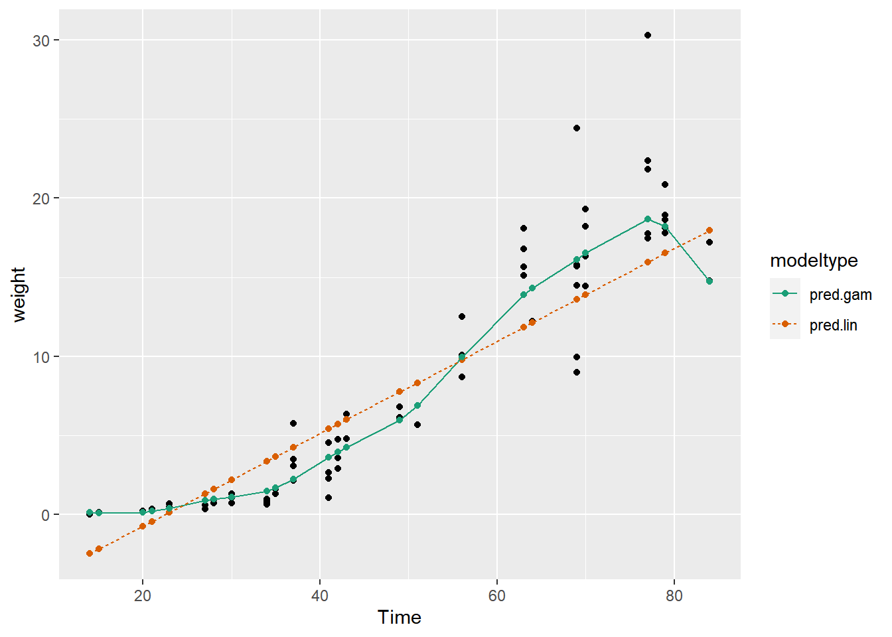
Notice that the linear model sometimes predicts negative weights! But GAM doesn’t.
The GAM learns the non-linear growth function of the soybean plants, including the fact that weight is never negative.
20.5 Tree-Based Methods
20.5.1 Random forests
You will again build a model to predict the number of bikes rented in an hour as a function of the weather, the type of day (holiday, working day, or weekend), and the time of day. You will train the model on data from the month of July.
You will use the ranger package to fit the random forest model.
ranger(fmla, data, num.trees, respect.unordered.factors = "order")
respect.unordered.factors: specifies how to treat unordered factor variables.
str(bikesJuly)## 'data.frame': 744 obs. of 12 variables:
## $ hr : Factor w/ 24 levels "0","1","2","3",..: 1 2 3 4 5 6 7 8 9 10 ...
## $ holiday : logi FALSE FALSE FALSE FALSE FALSE FALSE ...
## $ workingday: logi FALSE FALSE FALSE FALSE FALSE FALSE ...
## $ weathersit: chr "Clear to partly cloudy" "Clear to partly cloudy" "Clear to partly cloudy" "Clear to partly cloudy" ...
## $ temp : num 0.76 0.74 0.72 0.72 0.7 0.68 0.7 0.74 0.78 0.82 ...
## $ atemp : num 0.727 0.697 0.697 0.712 0.667 ...
## $ hum : num 0.66 0.7 0.74 0.84 0.79 0.79 0.79 0.7 0.62 0.56 ...
## $ windspeed : num 0 0.1343 0.0896 0.1343 0.194 ...
## $ cnt : int 149 93 90 33 4 10 27 50 142 219 ...
## $ instant : int 13004 13005 13006 13007 13008 13009 13010 13011 13012 13013 ...
## $ mnth : int 7 7 7 7 7 7 7 7 7 7 ...
## $ yr : int 1 1 1 1 1 1 1 1 1 1 ...Set up
# Random seed to reproduce results
seed <- 423563
# The outcome column
outcome <- "cnt"
# The input variables
vars <- c("hr", "holiday", "workingday", "weathersit", "temp", "atemp", "hum", "windspeed")
# Create the formula string for bikes rented as a function of the inputs
(fmla <- paste(outcome, "~", paste(vars, collapse = " + ")))## [1] "cnt ~ hr + holiday + workingday + weathersit + temp + atemp + hum + windspeed"# Load the package ranger
library(ranger)##
## Attaching package: 'ranger'## The following object is masked from 'package:randomForest':
##
## importance# Fit and print the random forest model
(bike_model_rf <- ranger(fmla, # formula
bikesJuly, # data
num.trees = 500,
respect.unordered.factors = "order",
seed = seed))## Ranger result
##
## Call:
## ranger(fmla, bikesJuly, num.trees = 500, respect.unordered.factors = "order", seed = seed)
##
## Type: Regression
## Number of trees: 500
## Sample size: 744
## Number of independent variables: 8
## Mtry: 2
## Target node size: 5
## Variable importance mode: none
## Splitrule: variance
## OOB prediction error (MSE): 8231
## R squared (OOB): 0.821Now, predict bike rentals for the month of August.
The predict() function for a ranger model produces a list. One of the elements of this list is predictions, a vector of predicted values. Access predictions with the $ notation.
# Make predictions on the August data
bikesAugust$pred <- predict(bike_model_rf, bikesAugust)$predictions
# Calculate the RMSE of the predictions
bikesAugust %>%
mutate(residual = cnt - pred) %>% # calculate the residual
summarize(rmse = sqrt(mean(residual^2))) # calculate rmse## rmse
## 1 97.2The poisson model you built for this data gave an RMSE of about 112.6. How does this model compare?
# Plot actual outcome vs predictions (predictions on x-axis)
ggplot(bikesAugust, aes(x = pred, y = cnt)) +
geom_point() +
geom_abline()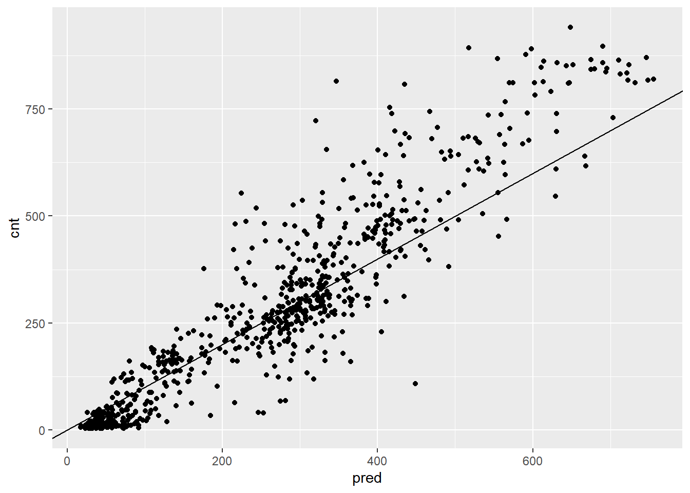
This random forest model outperforms the poisson count model on the same data; it is discovering more complex non-linear or non-additive relationships in the data.
Visualize random forest bike model predictions
Recall that the quasipoisson model mostly identified the pattern of slow and busy hours in the day, but it somewhat underestimated peak demands. You would like to see how the random forest model compares.
head(bikesAugust)## hr holiday workingday weathersit temp atemp hum windspeed cnt
## 1 0 FALSE TRUE Clear to partly cloudy 0.68 0.636 0.79 0.1642 47
## 2 1 FALSE TRUE Clear to partly cloudy 0.66 0.606 0.83 0.0896 33
## 3 2 FALSE TRUE Clear to partly cloudy 0.64 0.576 0.83 0.1045 13
## 4 3 FALSE TRUE Clear to partly cloudy 0.64 0.576 0.83 0.1045 7
## 5 4 FALSE TRUE Misty 0.64 0.591 0.78 0.1343 4
## 6 5 FALSE TRUE Misty 0.64 0.591 0.78 0.1343 49
## instant mnth yr pred
## 1 13748 8 1 77.4
## 2 13749 8 1 36.2
## 3 13750 8 1 38.3
## 4 13751 8 1 28.2
## 5 13752 8 1 42.2
## 6 13753 8 1 52.4first_two_weeks <- bikesAugust %>%
# Set start to 0, convert unit to days
mutate(instant = (instant - min(instant)) / 24) %>%
# Gather cnt and pred into a column named value with key valuetype
gather(key = valuetype, value = value, cnt, pred) %>%
# Filter for rows in the first two
filter(instant < 14)
head(first_two_weeks)## hr holiday workingday weathersit temp atemp hum windspeed
## 1 0 FALSE TRUE Clear to partly cloudy 0.68 0.636 0.79 0.1642
## 2 1 FALSE TRUE Clear to partly cloudy 0.66 0.606 0.83 0.0896
## 3 2 FALSE TRUE Clear to partly cloudy 0.64 0.576 0.83 0.1045
## 4 3 FALSE TRUE Clear to partly cloudy 0.64 0.576 0.83 0.1045
## 5 4 FALSE TRUE Misty 0.64 0.591 0.78 0.1343
## 6 5 FALSE TRUE Misty 0.64 0.591 0.78 0.1343
## instant mnth yr valuetype value
## 1 0.0000 8 1 cnt 47
## 2 0.0417 8 1 cnt 33
## 3 0.0833 8 1 cnt 13
## 4 0.1250 8 1 cnt 7
## 5 0.1667 8 1 cnt 4
## 6 0.2083 8 1 cnt 49Plot the predictions and actual counts by hour for the first 14 days of August.
# Plot predictions and cnt by date/time
randomforest_plot <-
ggplot(first_two_weeks, aes(x = instant, y = value,
color = valuetype, linetype = valuetype)) +
geom_point() +
geom_line() +
scale_x_continuous("Day", breaks = 0:14, labels = 0:14) +
scale_color_brewer(palette = "Dark2") +
ggtitle("Predicted August bike rentals, Random Forest model")
randomforest_plot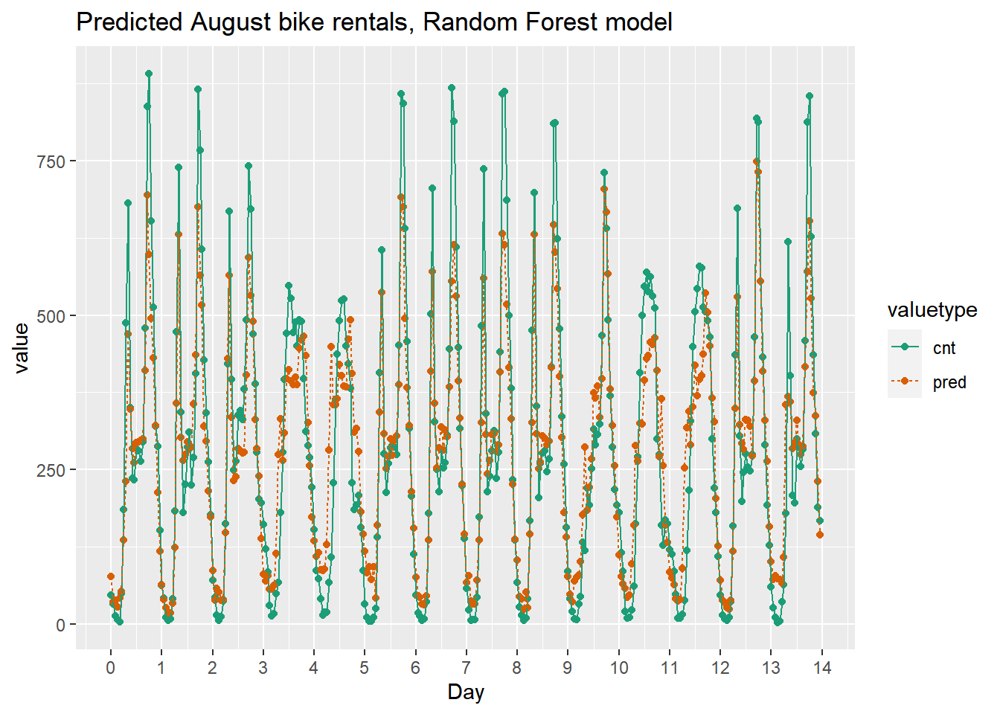
The random forest model captured the day-to-day variations in peak demand better than the quasipoisson model, but it still underestmates peak demand, and also overestimates minimum demand. So there is still room for improvement.
20.5.2 One-Hot-Encoding
20.5.2.1 vtreat
vtreat creates a treatment plan to transform categorical variables into indicator variables (coded "lev"), and to clean bad values out of numerical variables (coded "clean").
To design a treatment plan:
treatplan <- designTreatmentsZ(data, varlist)
data: the original training data framevarlist: a vector of input variables to be treated (as strings).
designTreatmentsZ() returns a list with an element scoreFrame: a data frame that includes the names and types of the new variables:
scoreFrame <- treatplan %>%
magrittr::use_series(scoreFrame) %>%
select(varName, origName, code)varName: the name of the new treated variableorigName: the name of the original variable that the treated variable comes fromcode: the type of the new variable."clean": a numerical variable with no NAs or NaNs"lev": an indicator variable for a specific level of the original categorical variable.
For these exercises, we want varName where code is either "clean" or "lev":
newvarlist <- scoreFrame %>%
filter(code %in% c("clean", "lev") %>%
magrittr::use_series(varName)To transform the dataset into all numerical and one-hot-encoded variables:
data.treat <- prepare(treatplan, data, varRestrictions = newvarlist)
treatplan: the treatment plandata: the data frame to be treatedvarRestrictions: the variables desired in the treated data
Assume that color and size are input variables, and popularity is the outcome to be predicted.
library(magrittr)
dframe <- read_tsv("data/dframe_vtreat.txt")
dframe## # A tibble: 10 × 3
## color size popularity
## <chr> <dbl> <dbl>
## 1 r 11 1.40
## 2 b 15 0.922
## 3 g 14 1.20
## 4 b 13 1.08
## 5 r 11 0.804
## 6 r 9 1.10
## 7 g 12 0.875
## 8 b 7 0.695
## 9 g 12 0.883
## 10 g 11 1.02# Create a vector of variable names
vars <- c("color", "size")
# Create the treatment plan
treatplan <- designTreatmentsZ(dframe, vars)## [1] "vtreat 1.6.4 inspecting inputs Mon Jan 15 16:10:00 2024"
## [1] "designing treatments Mon Jan 15 16:10:00 2024"
## [1] " have initial level statistics Mon Jan 15 16:10:00 2024"
## [1] " scoring treatments Mon Jan 15 16:10:00 2024"
## [1] "have treatment plan Mon Jan 15 16:10:00 2024"treatplan## [1] "treatmentplan"
## origName varName code rsq sig extraModelDegrees
## 1 color color_catP catP 0 1 2
## 2 size size clean 0 1 0
## 3 color color_lev_x_b lev 0 1 0
## 4 color color_lev_x_g lev 0 1 0
## 5 color color_lev_x_r lev 0 1 0# Examine the scoreFrame
(scoreFrame <- treatplan %>%
use_series(scoreFrame) %>%
select(varName, origName, code))## varName origName code
## 1 color_catP color catP
## 2 size size clean
## 3 color_lev_x_b color lev
## 4 color_lev_x_g color lev
## 5 color_lev_x_r color lev# We only want the rows with codes "clean" or "lev"
(newvars <- scoreFrame %>%
filter(code %in% c("clean", "lev")) %>%
use_series(varName))## [1] "size" "color_lev_x_b" "color_lev_x_g" "color_lev_x_r"# Create the treated training data
(dframe.treat <- prepare(treatplan, dframe, varRestriction = newvars))## size color_lev_x_b color_lev_x_g color_lev_x_r
## 1 11 0 0 1
## 2 15 1 0 0
## 3 14 0 1 0
## 4 13 1 0 0
## 5 11 0 0 1
## 6 9 0 0 1
## 7 12 0 1 0
## 8 7 1 0 0
## 9 12 0 1 0
## 10 11 0 1 020.5.2.2 Novel levels
When a level of a categorical variable is rare, sometimes it will fail to show up in training data. If that rare level then appears in future data, downstream models may not know what to do with it. When such novel levels appear, using model.matrix or caret::dummyVars to one-hot-encode will not work correctly.
vtreat is a “safer” alternative to model.matrix for one-hot-encoding, because it can manage novel levels safely. vtreat also manages missing values in the data (both categorical and continuous).
In this exercise, you will see how vtreat handles categorical values that did not appear in the training set.
Are there colors in testframe that didn’t appear in dframe?
testframe <- read_tsv("data/testframe_vtreat.txt")
list(testframe = unique(testframe$color), dframe = unique(dframe$color))## $testframe
## [1] "g" "y" "b" "r"
##
## $dframe
## [1] "r" "b" "g"# Use prepare() to one-hot-encode testframe
(testframe.treat <- prepare(treatplan, testframe, varRestriction = newvars))## size color_lev_x_b color_lev_x_g color_lev_x_r
## 1 7 0 1 0
## 2 8 0 1 0
## 3 10 0 0 0
## 4 12 1 0 0
## 5 6 0 0 0
## 6 8 0 0 1
## 7 12 0 1 0
## 8 12 1 0 0
## 9 12 0 0 0
## 10 8 1 0 0As you saw, vtreat encodes novel colors like yellow that were not present in the data as all zeros: ‘none of the known colors’. This allows downstream models to accept these novel values without crashing.
20.5.2.3 vtreat the bike rental data
In this exercise, you will create one-hot-encoded data frames of the July/August bike data, for use with xgboost later on.
Set the flag verbose=FALSE to prevent the function from printing too many messages.
# The outcome column
outcome <- "cnt"
# The input columns
vars <- c("hr", "holiday", "workingday", "weathersit", "temp", "atemp", "hum", "windspeed")
# Create the treatment plan from bikesJuly (the training data)
treatplan <- designTreatmentsZ(bikesJuly, vars, verbose = FALSE)
summary(treatplan)## Length Class Mode
## treatments 9 -none- list
## scoreFrame 8 data.frame list
## outcomename 1 -none- character
## vtreatVersion 1 package_version list
## outcomeType 1 -none- character
## outcomeTarget 1 -none- character
## meanY 1 -none- logical
## splitmethod 1 -none- character# Get the "clean" and "lev" variables from the scoreFrame
(newvars <- treatplan %>%
use_series(scoreFrame) %>%
# get the rows you care about
filter(code %in% c("clean", "lev")) %>%
# get the varName column
use_series(varName)) ## [1] "holiday"
## [2] "workingday"
## [3] "temp"
## [4] "atemp"
## [5] "hum"
## [6] "windspeed"
## [7] "hr_lev_x_0"
## [8] "hr_lev_x_1"
## [9] "hr_lev_x_10"
## [10] "hr_lev_x_11"
## [11] "hr_lev_x_12"
## [12] "hr_lev_x_13"
## [13] "hr_lev_x_14"
## [14] "hr_lev_x_15"
## [15] "hr_lev_x_16"
## [16] "hr_lev_x_17"
## [17] "hr_lev_x_18"
## [18] "hr_lev_x_19"
## [19] "hr_lev_x_2"
## [20] "hr_lev_x_20"
## [21] "hr_lev_x_21"
## [22] "hr_lev_x_22"
## [23] "hr_lev_x_23"
## [24] "hr_lev_x_3"
## [25] "hr_lev_x_4"
## [26] "hr_lev_x_5"
## [27] "hr_lev_x_6"
## [28] "hr_lev_x_7"
## [29] "hr_lev_x_8"
## [30] "hr_lev_x_9"
## [31] "weathersit_lev_x_Clear_to_partly_cloudy"
## [32] "weathersit_lev_x_Light_Precipitation"
## [33] "weathersit_lev_x_Misty"# Prepare the training data
bikesJuly.treat <- prepare(treatplan, bikesJuly, varRestriction = newvars)
# Prepare the test data
bikesAugust.treat <- prepare(treatplan, bikesAugust, varRestriction = newvars)
# Call str() on the treated data
str(bikesJuly.treat)## 'data.frame': 744 obs. of 33 variables:
## $ holiday : num 0 0 0 0 0 0 0 0 0 0 ...
## $ workingday : num 0 0 0 0 0 0 0 0 0 0 ...
## $ temp : num 0.76 0.74 0.72 0.72 0.7 0.68 0.7 0.74 0.78 0.82 ...
## $ atemp : num 0.727 0.697 0.697 0.712 0.667 ...
## $ hum : num 0.66 0.7 0.74 0.84 0.79 0.79 0.79 0.7 0.62 0.56 ...
## $ windspeed : num 0 0.1343 0.0896 0.1343 0.194 ...
## $ hr_lev_x_0 : num 1 0 0 0 0 0 0 0 0 0 ...
## $ hr_lev_x_1 : num 0 1 0 0 0 0 0 0 0 0 ...
## $ hr_lev_x_10 : num 0 0 0 0 0 0 0 0 0 0 ...
## $ hr_lev_x_11 : num 0 0 0 0 0 0 0 0 0 0 ...
## $ hr_lev_x_12 : num 0 0 0 0 0 0 0 0 0 0 ...
## $ hr_lev_x_13 : num 0 0 0 0 0 0 0 0 0 0 ...
## $ hr_lev_x_14 : num 0 0 0 0 0 0 0 0 0 0 ...
## $ hr_lev_x_15 : num 0 0 0 0 0 0 0 0 0 0 ...
## $ hr_lev_x_16 : num 0 0 0 0 0 0 0 0 0 0 ...
## $ hr_lev_x_17 : num 0 0 0 0 0 0 0 0 0 0 ...
## $ hr_lev_x_18 : num 0 0 0 0 0 0 0 0 0 0 ...
## $ hr_lev_x_19 : num 0 0 0 0 0 0 0 0 0 0 ...
## $ hr_lev_x_2 : num 0 0 1 0 0 0 0 0 0 0 ...
## $ hr_lev_x_20 : num 0 0 0 0 0 0 0 0 0 0 ...
## $ hr_lev_x_21 : num 0 0 0 0 0 0 0 0 0 0 ...
## $ hr_lev_x_22 : num 0 0 0 0 0 0 0 0 0 0 ...
## $ hr_lev_x_23 : num 0 0 0 0 0 0 0 0 0 0 ...
## $ hr_lev_x_3 : num 0 0 0 1 0 0 0 0 0 0 ...
## $ hr_lev_x_4 : num 0 0 0 0 1 0 0 0 0 0 ...
## $ hr_lev_x_5 : num 0 0 0 0 0 1 0 0 0 0 ...
## $ hr_lev_x_6 : num 0 0 0 0 0 0 1 0 0 0 ...
## $ hr_lev_x_7 : num 0 0 0 0 0 0 0 1 0 0 ...
## $ hr_lev_x_8 : num 0 0 0 0 0 0 0 0 1 0 ...
## $ hr_lev_x_9 : num 0 0 0 0 0 0 0 0 0 1 ...
## $ weathersit_lev_x_Clear_to_partly_cloudy: num 1 1 1 1 1 1 1 1 1 1 ...
## $ weathersit_lev_x_Light_Precipitation : num 0 0 0 0 0 0 0 0 0 0 ...
## $ weathersit_lev_x_Misty : num 0 0 0 0 0 0 0 0 0 0 ...str(bikesAugust.treat)## 'data.frame': 744 obs. of 33 variables:
## $ holiday : num 0 0 0 0 0 0 0 0 0 0 ...
## $ workingday : num 1 1 1 1 1 1 1 1 1 1 ...
## $ temp : num 0.68 0.66 0.64 0.64 0.64 0.64 0.64 0.64 0.66 0.68 ...
## $ atemp : num 0.636 0.606 0.576 0.576 0.591 ...
## $ hum : num 0.79 0.83 0.83 0.83 0.78 0.78 0.78 0.83 0.78 0.74 ...
## $ windspeed : num 0.1642 0.0896 0.1045 0.1045 0.1343 ...
## $ hr_lev_x_0 : num 1 0 0 0 0 0 0 0 0 0 ...
## $ hr_lev_x_1 : num 0 1 0 0 0 0 0 0 0 0 ...
## $ hr_lev_x_10 : num 0 0 0 0 0 0 0 0 0 0 ...
## $ hr_lev_x_11 : num 0 0 0 0 0 0 0 0 0 0 ...
## $ hr_lev_x_12 : num 0 0 0 0 0 0 0 0 0 0 ...
## $ hr_lev_x_13 : num 0 0 0 0 0 0 0 0 0 0 ...
## $ hr_lev_x_14 : num 0 0 0 0 0 0 0 0 0 0 ...
## $ hr_lev_x_15 : num 0 0 0 0 0 0 0 0 0 0 ...
## $ hr_lev_x_16 : num 0 0 0 0 0 0 0 0 0 0 ...
## $ hr_lev_x_17 : num 0 0 0 0 0 0 0 0 0 0 ...
## $ hr_lev_x_18 : num 0 0 0 0 0 0 0 0 0 0 ...
## $ hr_lev_x_19 : num 0 0 0 0 0 0 0 0 0 0 ...
## $ hr_lev_x_2 : num 0 0 1 0 0 0 0 0 0 0 ...
## $ hr_lev_x_20 : num 0 0 0 0 0 0 0 0 0 0 ...
## $ hr_lev_x_21 : num 0 0 0 0 0 0 0 0 0 0 ...
## $ hr_lev_x_22 : num 0 0 0 0 0 0 0 0 0 0 ...
## $ hr_lev_x_23 : num 0 0 0 0 0 0 0 0 0 0 ...
## $ hr_lev_x_3 : num 0 0 0 1 0 0 0 0 0 0 ...
## $ hr_lev_x_4 : num 0 0 0 0 1 0 0 0 0 0 ...
## $ hr_lev_x_5 : num 0 0 0 0 0 1 0 0 0 0 ...
## $ hr_lev_x_6 : num 0 0 0 0 0 0 1 0 0 0 ...
## $ hr_lev_x_7 : num 0 0 0 0 0 0 0 1 0 0 ...
## $ hr_lev_x_8 : num 0 0 0 0 0 0 0 0 1 0 ...
## $ hr_lev_x_9 : num 0 0 0 0 0 0 0 0 0 1 ...
## $ weathersit_lev_x_Clear_to_partly_cloudy: num 1 1 1 1 0 0 1 0 0 0 ...
## $ weathersit_lev_x_Light_Precipitation : num 0 0 0 0 0 0 0 0 0 0 ...
## $ weathersit_lev_x_Misty : num 0 0 0 0 1 1 0 1 1 1 ...The bike data is now in completely numeric form, ready to use with xgboost. Note that the treated data does not include the outcome column.
20.5.3 Gradient boosting
Gradient boosting is an ensemble method that builds up a model by incrementally improving the existing one. Repeat until either the residuals are small enough, or the maximum number of iterations is reached.
Regularization: learning rate
η ∈ (0, 1)
Larger η : faster learning
Smaller η : less risk of over
xgboost package:
Run
xgb.cv()with a large number of rounds (trees).xgb.cv()$evaluation_log: records estimated RMSE for each round.- Find the number of trees that minimizes estimated RMSE: \(n_{best}\)
Run
xgboost(), settingnrounds= \(n_{best}\)
20.5.3.1 Find the right number of trees
In this exercise, you will get ready to build a gradient boosting model to predict the number of bikes rented in an hour as a function of the weather and the type and time of day. You will train the model on data from the month of July.
Remember that bikesJuly.treat no longer has the outcome column, so you must get it from the untreated data: bikesJuly$cnt.
You will use the xgboost package to fit the random forest model.
xgb.cv()uses cross-validation to estimate the out-of-sample learning error as each new tree is added to the model.The appropriate number of trees to use in the final model is the number that minimizes the holdout RMSE.
The key arguments to the xgb.cv() call are:
data: a numeric matrix.label: vector of outcomes (also numeric).nrounds: the maximum number of rounds (trees to build).nfold: the number of folds for the cross-validation. 5 is a good number.objective:"reg:squarederror"for continuous outcomes.eta: the learning rate.max_depth: maximum depth of trees.early_stopping_rounds: after this many rounds without improvement, stop.verbose:FALSEto stay silent.
set.seed(1234)
# Load the package xgboost
library(xgboost)##
## Attaching package: 'xgboost'## The following object is masked from 'package:dplyr':
##
## slice# Run xgb.cv
cv <- xgb.cv(data = as.matrix(bikesJuly.treat),
label = bikesJuly$cnt,
nrounds = 50,
nfold = 5,
objective = "reg:squarederror",
eta = 0.75,
max_depth = 5,
early_stopping_rounds = 5,
verbose = FALSE # silent
); cv## ##### xgb.cv 5-folds
## iter train_rmse_mean train_rmse_std test_rmse_mean test_rmse_std
## 1 161.5 1.255 168.8 6.00
## 2 121.2 1.156 134.6 4.69
## 3 105.4 2.290 120.9 8.65
## 4 92.3 1.555 107.1 6.42
## 5 81.0 4.094 101.4 3.83
## 6 70.4 4.588 96.1 4.49
## 7 65.1 4.510 92.9 3.76
## 8 59.8 4.005 90.1 2.85
## 9 56.6 4.103 89.3 3.80
## 10 52.7 4.536 88.2 4.51
## 11 49.1 2.629 87.4 2.48
## 12 46.1 2.230 87.0 2.87
## 13 43.3 2.285 86.1 3.00
## 14 41.5 2.421 85.7 2.98
## 15 39.3 2.870 84.7 2.67
## 16 37.2 2.554 84.4 2.72
## 17 35.7 2.733 84.7 3.29
## 18 33.8 2.237 84.1 3.43
## 19 32.1 1.887 84.4 3.93
## 20 30.9 2.122 84.2 3.63
## 21 29.6 2.054 83.8 3.28
## 22 28.1 1.892 83.7 3.65
## 23 27.2 1.968 83.6 3.81
## 24 26.4 2.126 83.5 3.84
## 25 25.5 2.208 83.3 3.97
## 26 24.5 2.143 83.5 4.10
## 27 23.2 2.056 83.3 3.76
## 28 22.4 1.767 83.2 3.82
## 29 21.4 1.618 83.2 3.96
## 30 20.7 1.415 83.4 4.08
## 31 20.0 1.348 83.5 4.07
## 32 19.2 1.164 83.4 4.24
## 33 18.6 0.933 83.1 4.50
## 34 18.1 0.766 83.4 4.56
## 35 17.6 0.839 83.6 4.61
## 36 17.1 0.800 83.6 4.44
## 37 16.6 0.843 83.7 4.27
## 38 16.0 0.717 83.6 4.06
## iter train_rmse_mean train_rmse_std test_rmse_mean test_rmse_std
## Best iteration:
## iter train_rmse_mean train_rmse_std test_rmse_mean test_rmse_std
## 33 18.6 0.933 83.1 4.5summary(cv)## Length Class Mode
## call 10 -none- call
## params 4 -none- list
## callbacks 2 -none- list
## evaluation_log 5 data.table list
## niter 1 -none- numeric
## nfeatures 1 -none- numeric
## folds 5 -none- list
## best_iteration 1 -none- numeric
## best_ntreelimit 1 -none- numericEach row of the evaluation_log corresponds to an additional tree, so the row number tells you the number of trees in the model.
# Get the evaluation log
elog <- cv$evaluation_log
elog## iter train_rmse_mean train_rmse_std test_rmse_mean test_rmse_std
## 1: 1 161.5 1.255 168.8 6.00
## 2: 2 121.2 1.156 134.6 4.69
## 3: 3 105.4 2.290 120.9 8.65
## 4: 4 92.3 1.555 107.1 6.42
## 5: 5 81.0 4.094 101.4 3.83
## 6: 6 70.4 4.588 96.1 4.49
## 7: 7 65.1 4.510 92.9 3.76
## 8: 8 59.8 4.005 90.1 2.85
## 9: 9 56.6 4.103 89.3 3.80
## 10: 10 52.7 4.536 88.2 4.51
## 11: 11 49.1 2.629 87.4 2.48
## 12: 12 46.1 2.230 87.0 2.87
## 13: 13 43.3 2.285 86.1 3.00
## 14: 14 41.5 2.421 85.7 2.98
## 15: 15 39.3 2.870 84.7 2.67
## 16: 16 37.2 2.554 84.4 2.72
## 17: 17 35.7 2.733 84.7 3.29
## 18: 18 33.8 2.237 84.1 3.43
## 19: 19 32.1 1.887 84.4 3.93
## 20: 20 30.9 2.122 84.2 3.63
## 21: 21 29.6 2.054 83.8 3.28
## 22: 22 28.1 1.892 83.7 3.65
## 23: 23 27.2 1.968 83.6 3.81
## 24: 24 26.4 2.126 83.5 3.84
## 25: 25 25.5 2.208 83.3 3.97
## 26: 26 24.5 2.143 83.5 4.10
## 27: 27 23.2 2.056 83.3 3.76
## 28: 28 22.4 1.767 83.2 3.82
## 29: 29 21.4 1.618 83.2 3.96
## 30: 30 20.7 1.415 83.4 4.08
## 31: 31 20.0 1.348 83.5 4.07
## 32: 32 19.2 1.164 83.4 4.24
## 33: 33 18.6 0.933 83.1 4.50
## 34: 34 18.1 0.766 83.4 4.56
## 35: 35 17.6 0.839 83.6 4.61
## 36: 36 17.1 0.800 83.6 4.44
## 37: 37 16.6 0.843 83.7 4.27
## 38: 38 16.0 0.717 83.6 4.06
## iter train_rmse_mean train_rmse_std test_rmse_mean test_rmse_std# Determine and print how many trees minimize training and test error
elog %>%
# find the index of min(train_rmse_mean)
summarize(ntrees.train = which.min(train_rmse_mean),
# find the index of min(test_rmse_mean)
ntrees.test = which.min(test_rmse_mean)) ## ntrees.train ntrees.test
## 1 38 33In most cases, ntrees.test is less than ntrees.train. The training error keeps decreasing even after the test error starts to increase. It’s important to use cross-validation to find the right number of trees (as determined by ntrees.test) and avoid an overfit model.
20.5.3.2 Fit xgboost model and predict
You will fit a gradient boosting model using xgboost() to predict the number of bikes rented in an hour as a function of the weather and the type and time of day. You will train the model on data from the month of July and predict on data for the month of August.
# best number of trees
ntrees <- 30
set.seed(1234)
# Run xgboost on training data
bike_model_xgb <- xgboost(
data = as.matrix(bikesJuly.treat), # training data as matrix
label = bikesJuly$cnt, # column of outcomes
nrounds = ntrees, # number of trees to build
objective = "reg:squarederror", # objective
eta = 0.75, # learning rate
max_depth = 5,
verbose = FALSE # silent
)
# Make predictions on testing data
bikesAugust$pred <- predict(bike_model_xgb, as.matrix(bikesAugust.treat))
# Plot predictions (on x axis) vs actual bike rental count
ggplot(bikesAugust, aes(x = pred, y = cnt)) +
geom_point() +
geom_abline()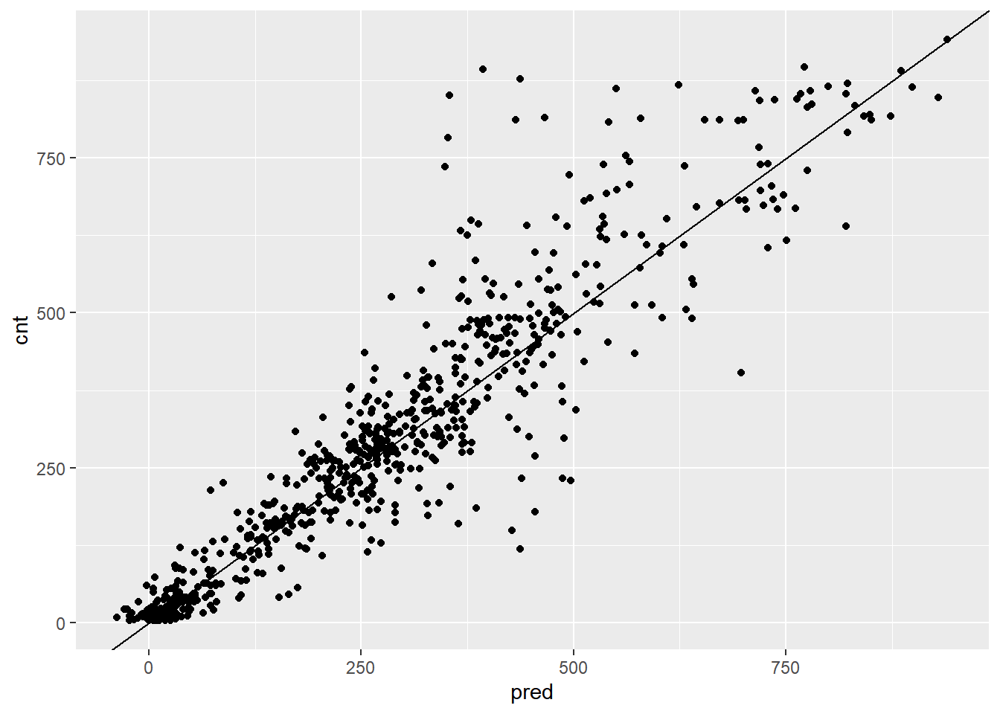
Overall, the scatterplot looked pretty good, but did you notice that the model made some negative predictions?
20.5.3.3 Evaluate the xgboost model
You will evaluate the gradient boosting model bike_model_xgb that you fit in the last exercise, using data from the month of August.
You’ll compare this model’s RMSE for August to the RMSE of previous models that you’ve built.
str(bikesAugust)## 'data.frame': 744 obs. of 13 variables:
## $ hr : Factor w/ 24 levels "0","1","2","3",..: 1 2 3 4 5 6 7 8 9 10 ...
## $ holiday : logi FALSE FALSE FALSE FALSE FALSE FALSE ...
## $ workingday: logi TRUE TRUE TRUE TRUE TRUE TRUE ...
## $ weathersit: chr "Clear to partly cloudy" "Clear to partly cloudy" "Clear to partly cloudy" "Clear to partly cloudy" ...
## $ temp : num 0.68 0.66 0.64 0.64 0.64 0.64 0.64 0.64 0.66 0.68 ...
## $ atemp : num 0.636 0.606 0.576 0.576 0.591 ...
## $ hum : num 0.79 0.83 0.83 0.83 0.78 0.78 0.78 0.83 0.78 0.74 ...
## $ windspeed : num 0.1642 0.0896 0.1045 0.1045 0.1343 ...
## $ cnt : int 47 33 13 7 4 49 185 487 681 350 ...
## $ instant : int 13748 13749 13750 13751 13752 13753 13754 13755 13756 13757 ...
## $ mnth : int 8 8 8 8 8 8 8 8 8 8 ...
## $ yr : int 1 1 1 1 1 1 1 1 1 1 ...
## $ pred : num 52.38 40.3 6.55 12.72 -22.96 ...Compare to the RMSE from the:
poisson model (approx. 112.6) & random forest model (approx. 96.7).
# Calculate RMSE
bikesAugust %>%
mutate(residuals = cnt - pred) %>%
summarize(rmse = sqrt(mean(residuals^2)))## rmse
## 1 84.4Even though this gradient boosting made some negative predictions, overall it makes smaller errors than the previous two models. Perhaps rounding negative predictions up to zero is a reasonable tradeoff.
20.5.3.4 Visualize the xgboost model
You’ve now seen three different ways to model the bike rental data. Let’s compare the gradient boosting model’s predictions to the other two models as a function of time.
# Plot predictions and actual bike rentals as a function of time (days)
bikesAugust %>%
# set start to 0, convert unit to days
mutate(instant = (instant - min(instant))/24) %>%
gather(key = valuetype, value = value, cnt, pred) %>%
filter(instant < 14) %>% # first two weeks
ggplot(aes(x = instant, y = value,
color = valuetype, linetype = valuetype)) +
geom_point() +
geom_line() +
scale_x_continuous("Day", breaks = 0:14, labels = 0:14) +
scale_color_brewer(palette = "Dark2") +
ggtitle("Predicted August bike rentals, Gradient Boosting model")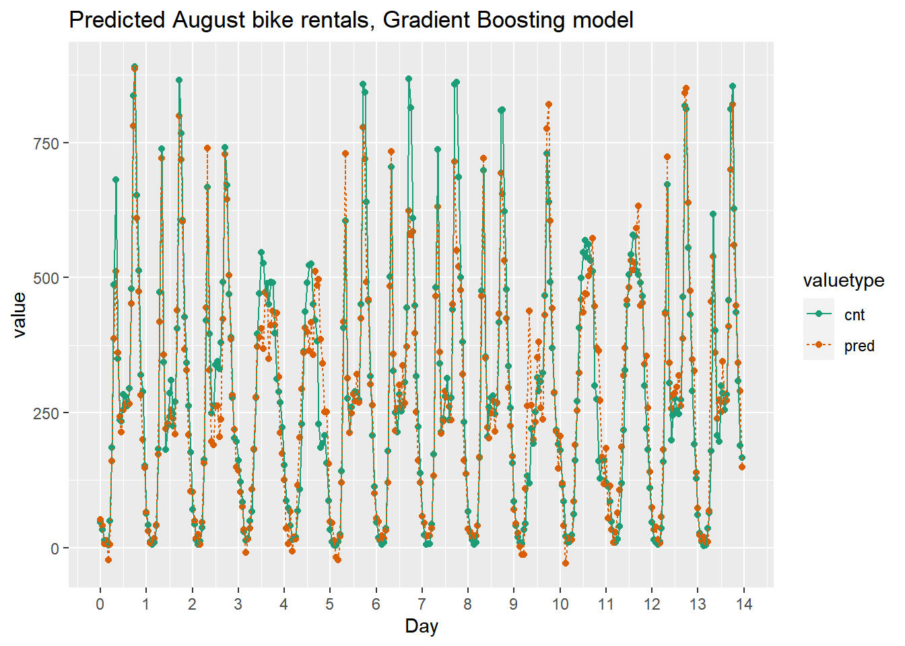
The gradient boosting pattern captures rental variations due to time of day and other factors better than the previous models.
gridExtra::grid.arrange(quasipoisson_plot, randomforest_plot, nrow = 2)